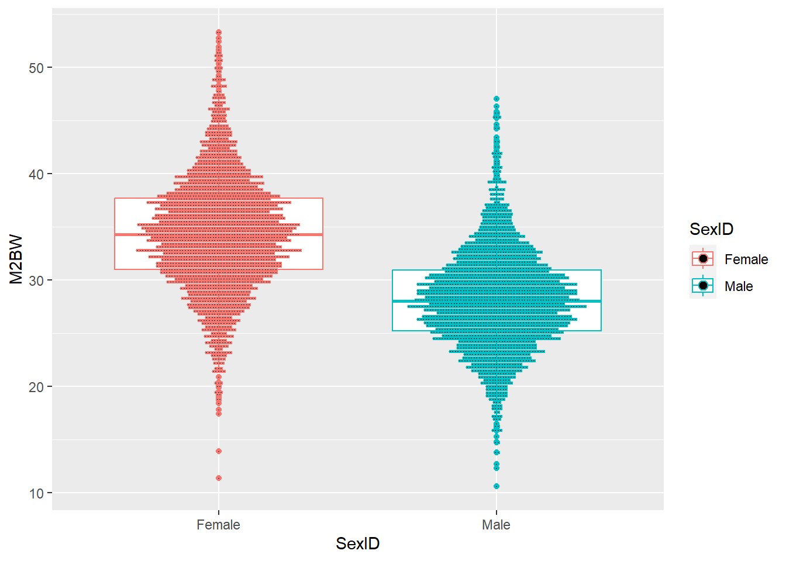
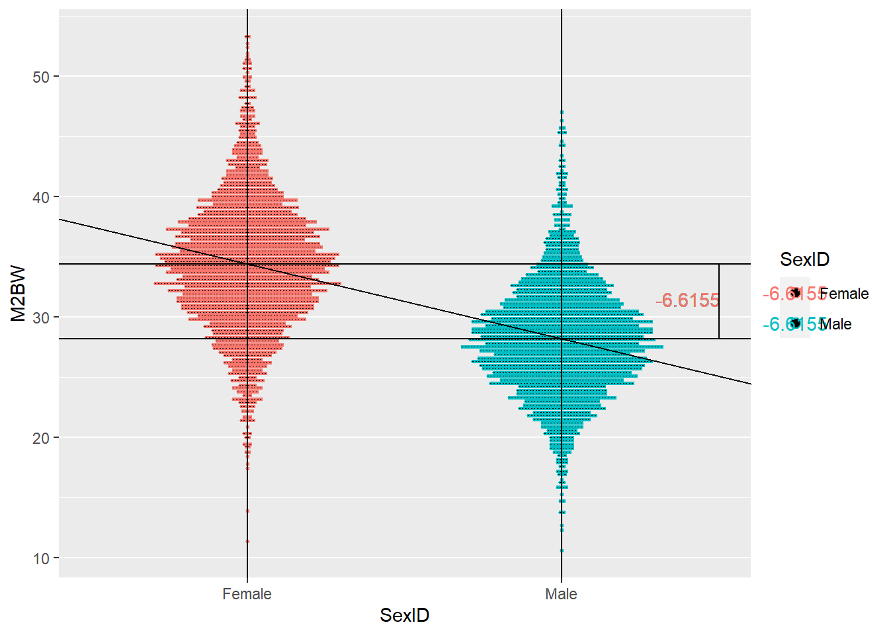
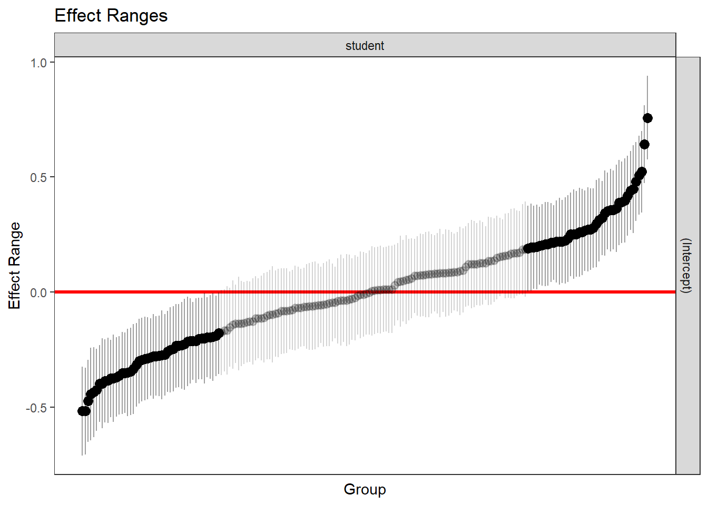
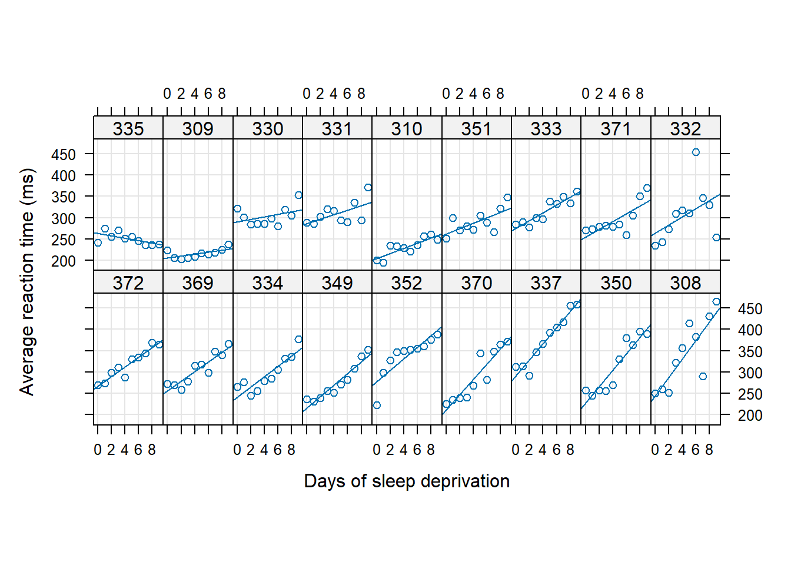
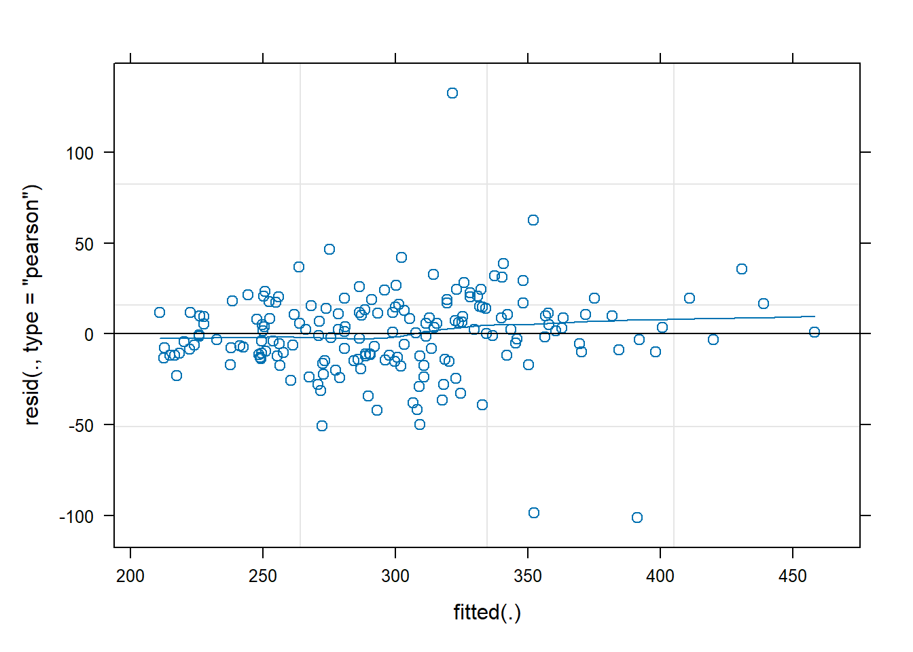
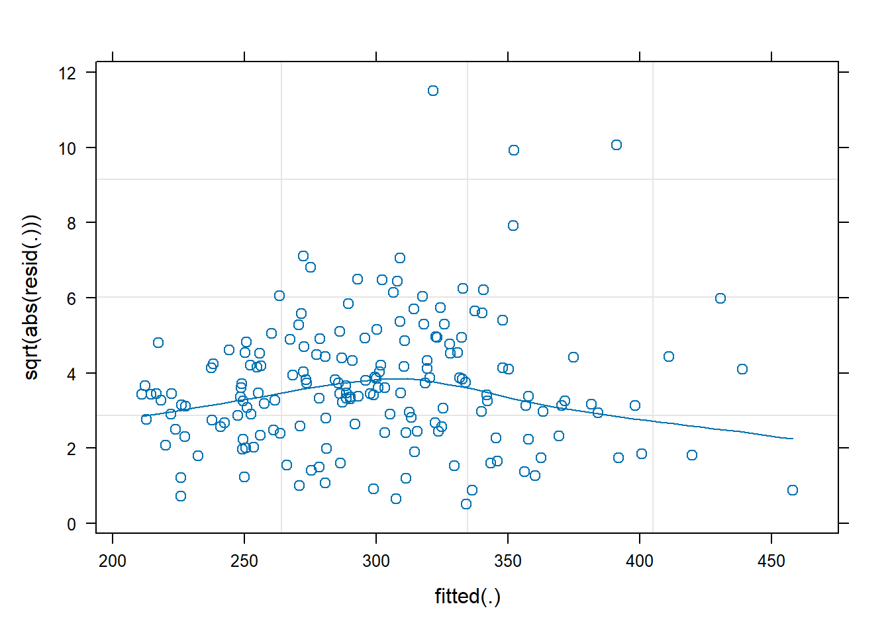
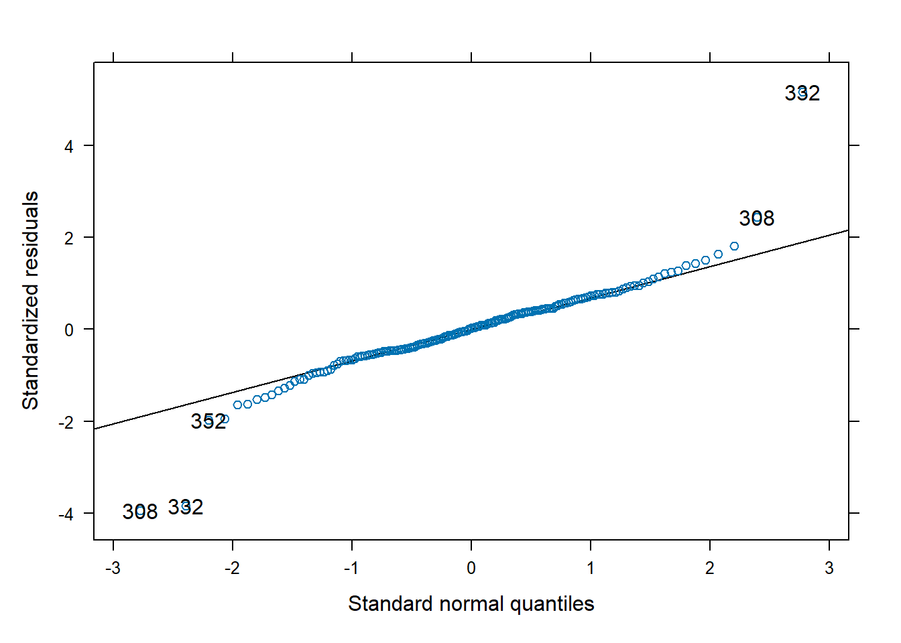

MMRM
Zehui Bai
2024-09-25 11:28:37
1 Introduction
1.2 Hierarchical and Marginal model
Hierarchical Models (Also Known as Multilevel or Mixed-Effect Models)
- Hierarchical models explicitly consider the hierarchical structure of data. For example, students nested within classes, which are nested within schools.
- They include both fixed effects (common to all groups) and random effects (specific to each group or level).
- Random effects allow for individual differences at each level (like differences among schools or among classes within schools).
- Hierarchical models can handle unbalanced data and different numbers of observations across groups.
- They provide insights into both the individual group level and the overall population.
- Marginal models need a correct specification of the correlation structure for consistent estimates, while hierarchical models are more flexible in this aspect.
The general linear mixed model can be written as:
\[ \begin{array}{c} \mathbf{Y}_{i}=X_{i} \beta+Z_{i} \mathbf{b}_{i}+\epsilon_{i} \\ \mathbf{b}_{i} \sim N(\mathbf{0}, D) \quad \text { und } \quad \epsilon_{i} \sim N\left(0, \Sigma_{i}\right) \end{array} \] und \(\mathbf{b}_{1}, \ldots, \mathbf{b}_{N}, \epsilon_{1}, \ldots, \epsilon_{N}\) are stochastically independent. This can be rewritten as Hierarchical model \[ \mathbf{Y}_{i} \mid \mathbf{b}_{i}=N\left(X_{i} \beta+Z_{i} \mathbf{b}_{i}, \Sigma_{i}\right), \quad \mathbf{b}_{i} \sim N(\mathbf{0}, D) \] One often assumes that \(\Sigma_{i}\) only depends on the dimension of \(i\) i.e. that the unknown parameters in \(\Sigma_{i}\) are independent on \(i\) (depends only on the dimensionality of \(i\), the unknown parameter \(\Sigma_{i}\) is independent of \(i\))
Marginal Models (Also Known as Population-Averaged Models)
- Marginal models focus on the average response of the population, rather than the individual group levels.
- They use generalized estimating equations (GEEs) to estimate the average response.
- These models explicitly model the correlation structure of the data but do not estimate random effects.
- They are suitable when the interest is in the average effect across all subjects or units, rather than the specific random effects.
- Marginal models provide an understanding of the average behavior of the entire population under study.
- They are robust to certain types of misspecifications of the correlation structure.
The following marginal model follows from the hierarchical model: \[\mathbf{Y}_{i} \sim N\left(X_{i} \beta, Z_{i} D Z_{i}^{T}+\Sigma_{i}\right)\] The hierarchical model implies the marginal model, the reverse is not generally true: \(V_{i}=Z_{i} D Z_{i}^{T}+\Sigma_{i}\)
1.3 Maximum Likelihood (ML)
A linear mixed-effects model is of the form \[ y=\underbrace{X \beta}_{\text {fixed }}+\underbrace{Z b}_{\text {random }}+\underbrace{\varepsilon}_{\text {error }}, \] where - \(y\) is the \(n\)-by-1 response vector, and \(n\) is the number of observations. - \(X\) is an \(n\)-by-p fixed-effects design matrix. - \(\beta\) is a \(p\)-by- 1 fixed-effects vector. - \(Z\) is an \(n\)-by- \(q\) random-effects design matrix. - \(b\) is a \(q\)-by-1 random-effects vector. - \(\varepsilon\) is the \(n\)-by-1 observation error vector.
The random-effects vector, \(b\), and the error vector, \(\varepsilon\), are assumed to have the following independent prior distributions: \[ \begin{aligned} & b \sim N\left(0, \sigma^2 D(\theta)\right), \\ & \varepsilon \sim N\left(0, \sigma^2 I\right), \end{aligned} \]
The maximum likelihood estimation includes both regression coefficients and the variance components, that is, both fixed-effects and random-effects terms in the likelihood function.
For a linear mixed-effects model defined above, the conditional response of the response variable \(y\) given \(\beta, b, \theta\), and \(\sigma^2\) is \[ y \mid b, \beta, \theta, \sigma^2 \sim N\left(X \beta+Z b, \sigma^2 I_n\right) . \]
The likelihood of \(y\) given \(\beta, \theta\), and \(\sigma^2\) is \[ P\left(y \mid \beta, \theta, \sigma^2\right)=\int P\left(y \mid b, \beta, \theta, \sigma^2\right) P\left(b \mid \theta, \sigma^2\right) d b, \] where \[ \begin{aligned} & P\left(b \mid \theta, \sigma^2\right)=\frac{1}{\left(2 \pi \sigma^2\right)^{q / 2}|D(\theta)|^{1 / 2}} \exp \left\{-\frac{1}{2 \sigma^2} b^T D^{-1} b\right\} \text { and } \\ & P\left(y \mid b, \beta, \theta, \sigma^2\right)=\frac{1}{\left(2 \pi \sigma^2\right)^{n / 2}} \exp \left\{-\frac{1}{2 \sigma^2}(y-X \beta-Z b)^T(y-X \beta-Z b)\right\} . \end{aligned} \]
Suppose \(\Lambda(\theta)\) is the lower triangular Cholesky factor of \(D(\theta)\) and \(\Delta(\theta)\) is the inverse of \(\Lambda(\theta)\). Then, \[ D(\theta)^{-1}=\Delta(\theta)^T \Delta(\theta) . \]
Define \[ r^2(\beta, b, \theta)=b^T \Delta(\theta)^T \Delta(\theta) b+(y-X \beta-Z b)^T(y-X \beta-Z b), \] and suppose \(b^*\) is the value of \(b\) that satisfies \[ \left.\frac{\partial r^2(\beta, b, \theta)}{\partial b}\right|_{b^*}=0 \] for given \(\beta\) and \(\theta\). Then, the likelihood function is \[ P\left(y \mid \beta, \theta, \sigma^2\right)=\left(2 \pi \sigma^2\right)^{-n / 2}|D(\theta)|^{-1 / 2} \exp \left\{-\frac{1}{2 \sigma^2} r^2\left(\beta, b^*(\beta), \theta\right)\right\} \frac{1}{\left|\Delta^T \Delta+Z^T Z\right|^{1 / 2}} . \]
\(\mathrm{P}\left(\mathrm{y} \mid \beta, \theta, \sigma^2\right)\) is first maximized with respect to \(\beta\) and \(\sigma^2\) for a given \(\theta\). Thus the optimized solutions \(\widehat{\beta}(\theta)\) and \(\widehat{\sigma}^2(\theta)\) are obtained as functions of \(\theta\). Substituting these solutions into the likelihood function produces \(P\left(y \mid \widehat{\beta}(\theta), \theta, \widehat{\sigma}^2(\theta)\right)\). This expression is called a profiled likelihood where \(\beta\) and \(\sigma^2\) have been profiled out. \(P\left(y \mid \widehat{\beta}(\theta), \theta, \widehat{\sigma}^2(\theta)\right)\) is a function of \(\theta\), and the algorithm then optimizes it with respect to \(\theta\). Once it finds the optimal estimate of \(\theta\), the estimates of \(\beta\) and \(\sigma^2\) are given by \(\widehat{\beta}(\theta)\) and \(\widehat{\sigma}^2(\theta)\).
Summary
The ML method treats \(\beta\) as fixed but unknown quantities when the variance components are estimated, but does not take into account the degrees of freedom lost by estimating the fixed effects. This causes ML estimates to be biased with smaller variances. However, one advantage of ML over REML is that it is possible to compare two models in terms of their fixed- and random-effects terms. On the other hand, if you use REML to estimate the parameters, you can only compare two models, that are nested in their random-effects terms, with the same fixed-effects design.
Problem of MLE
Maximum likelihood estimation uses an iterative interactive method to estimate fixed effects and variance when estimating fixed effects and random effects (variance components) in a mixed effects model. When estimating variance, you need a reference point, which is the fixed effect, such as the mean. Therefore, MLE first estimates the fixed effects and then estimates the variance components. Use EM or IGLS iteration method to estimate. Fixed effects are estimated first, assuming missing variance or random effects for any observations. Then the variance is estimated based on the fixed effects, and iteratively until the estimated value no longer changes.
Estimating fixed effects, which means treating the fixed effects as known and fixed when estimating the variance, will cause two problems.
- Variation in fixed effects is not considered
- Degrees of freedom consumed when estimating fixed effects are not taken into account
When the sample is large, these two problems are not a problem. When the sample is small, these two problems have a relatively large impact on the estimated variance. When calculating the population variance of the mean, use “each X value minus the sum of squares of the population mean” as the numerator, and the denominator uses N; when calculating the sample variance, use “each 1 (because the mean is estimated, a penalty is needed at this time); and ML estimation is similar to the estimation of the population variance, but in practice the sample mean is used, and N is used as the numerator instead of N-1. The estimated values are almost the same when the sample is large, but they are very different when the sample is small. This will lead to a smaller estimated variance and a smaller standard error of the fixed effects, leading to an inflated type I error.
1.4 Restricted Maximum Likelihood (REML)
The idea of Restricted Maximum Likelihood (REML) comes from realization that the variance estimator given by the Maximum Likelihood (ML) is biased. What is an estimator and in which way it is biased? An estimator is simply an approximation / estimate of model parameters. Assuming that statistical observations follow Normal distribution, there are two parameters: \(\mu\) (mean) and \(\sigma^2\) (variance) to estimate if one wants to summarize the observations. It turns out that the variance estimator given by Maximum Likelihood (ML) is biased, i.e. the value we obtain from the ML model over- or under-estimates the true variance, see the figure below.
Figure: Illustration of biased vs. unbiased estimators
REML is similar to the “N-1” version of MLE, with the variance corrected. REML separates the process of estimating fixed effects and variance, and can estimate variance more accurately when using small samples, thus obtaining more accurate standard errors of fixed effects, thereby controlling type one error inflation.
- The first step in REML is to ignore the hierarchical structure and first obtain the residuals through ordinary least squares (OLS). The OLS residuals have the same conditional variance (based on the X variable) as the original results. When using OLS residuals to estimate variance, the fixed effects are limited to 0, so there is no need to consider fixed effects when REML estimates variance components.
- The second step is to estimate the fixed effects. GLS is used to estimate fixed effects through matrix multiplication, that is, the variance components estimated by REML are put into Generalized least squares (generalized least squares method) to estimate fixed effects.
In SAS, Both PROC MIXED and PROC GLIMMIX provide maximum likelihood estimates (abbreviated MLE) of model effects as well as REML estimates of variance components. REML default variance estimation method. ML variance estimates can be obtained by using METHOD=ML in PROC MIXED or METHOD=MSPL in PROC GLIMMIX. The variance estimate resulting from the ML variance estimate will be smaller than the corresponding REML estimate, the resulting confidence interval will be narrower, and the test statistic will be larger. This reflects the well-known fact that ML estimates of variance components are biased downward.
For example, in the one-sample case, when \(y_{1}, y_{2}, \ldots, y_{n}\) is a random sample from \(\mathrm{N}\left(\mu, \sigma^{2}\right)\), the ML estimate of the variance is as follows: \[ \sum_{i}\left(y_{i}-\bar{y}\right)^{2} / n \]
whereas the sample variance - which is the simplest REML variance estimate-is as follows: \[ \sum_{i}\left(y_{i}-\bar{y}\right)^{2} /(n-1) \] The latter is unbiased and is generally considered the preferred variance estimate. It can be easily seen that using ML variance estimation results in increased Type 1 error rates (up to 25% rejection rate for nominal \(a=0.05\)) and insufficient confidence interval coverage.
proc mixed data=bond method=reml;
class ingot metal;
model pres=metal;
random ingot;
run;
proc glimmix data=bond method=rspl;
class ingot metal;
model pres=metal;
random ingot;
run;Summary
REML accounts for the degrees of freedom lost by estimating the fixed effects, and makes a less biased estimation of random effects variances. The estimates of \(\theta\) and \(\sigma^2\) are invariant to the value of \(\beta\) and less sensitive to outliers in the data compared to ML estimates. However, if you use REML to estimate the parameters, you can only compare two models that have the identical fixed-effects design matrices and are nested in their random-effects terms.
1.5 Small Sample Variance Correction
In the case of small samples, the variance component of the fixed effects (which can be understood as the standard error) is not accurately estimated, whether it is MLE or REML. Furthermore, when calculating the p-value of fixed effects, the fisher information and central limit theorem (asympotics) that need to be used will fail in small samples, resulting in an underestimation of the variance, thus leading to a type of error inflation.
- Some scholars pointed out that this problem can be solved using the Bayesian method (the Bayesian method does not rely on asympotics),
- But Kackar-Harville and later Kendward-roger solved it within the frequentist school by correcting square shame.
1.5.1 Kackar-Harville correction
Kackar-Harville discovered the following formula, the variance of fixed effects is equal to the REML variance estimate of the fixed effects sample estimate plus the small sample bias.
\[ \operatorname{Var}(\gamma)=\operatorname{Var}^{R E M L}(\hat{\gamma})+\text { Small Sample Bias } \]
A series of studies from KH to KR are aimed at how to estimate small sample bias. KH found that the estimation of Small sample bias (SSB) requires the use of the population value of the variance component (rather than the sample estimate); then they used the Taylor series expansion method to asymptotically estimate SSB using the sample estimate of the variance and covariance components. ; Later, Prasad-Rao and Harville-Jeske further expanded and developed this method based on KH. So this correction is sometimes called Prasad-Rao-Jeske-kackar-Harville correction.
1.5.2 Kendward-Roger correction
KR further found that “REML variance estimate of fixed effect sample estimate” also has problems with small samples, that is, when REML estimates fixed effects, it directly uses the estimated variance into the GLS estimation equation to estimate fixed effects. At this time, there is no Consider the variation of the variance component itself, but directly treat it as known and fixed.
KR further uses Taylor’s formula expansion to estimate “REML variance estimates of fixed effects sample estimates”, taking into account the fact that the variance components when estimating fixed effects are estimates and are not known. In the case of small samples, the t test is used instead of the Z test (the multivariate case corresponds to the chi-square test instead of the F test).
- The first step is equivalent to giving an accurate estimate of the residuals in “t=fixed effects/residuals”
- The second step is to calculate the exact degrees of freedom. In mixed effects models, the calculation formula for the degrees of freedom often does not exist, and it is difficult to estimate the accurate degrees of freedom. KR uses the moment estimation matching procedure (method of moments matching procedure), and the estimation at this time is more accurate, sometimes even with fractional degrees of freedom.
1.6 Test of Fixed Effects
Tests of fixed effects are typically done with either Wald or likelihood ratio (LRT) tests. With the assumptions of asymptotic distributions and independent predictors, Wald and LRT tests are equivalent. How large the data set needs to be for the asymptotic distribution to be a good approximation depends not only on how many observations you have, but also on the response variable type and the size of subgroups of observations formed by the categorical variables in the model. With a continuous response variable in a linear mixed model, subgroup sizes as small as five may be enough for the Wald and LRT to be similar. When the response is an indicator variable and the proportion of events of interest is small, groups size of one hundred may not be large enough for the Wald and LRT results to be similar.
When a data set size is not large enough to be a good approximation of the asymptotic distribution or there is some correlation amongst the predictors, the Wald and LRT test results can vary considerably.
- Wald test. Tests of the effect size which is scaled using the estimated standard error.
- LRT (Likelihood Ratio Test.) Tests the difference in two nested models using the Chi square distribution.
Test if coefficients are zero
Wald test. Tests of the effect size which is scaled using the estimated standard error.
LRT (Likelihood Ratio Test.) Tests the difference in two nested models using the Chi square distribution.
KRmodComp. For linear mixed models with little correlation among predictors, a Wald test using the approach of Kenward and Rogers (1997) will be quite similar to LRT test results. The function is only available for linear mixed models (does not support glmer() models.) An F test of nested models with an estimated degrees of freedom. The KRmodcomp() function estimates which F-test distribution is the best distribution from the family of F distributions. This function addresses the degrees of freedom concern.
Profiled confidence interval. While not a formal test, an interval which does not contain zero indicates the parameter is significant. The profiled confidence interval of a parameter is constructed by holding all other model parameters constant and then examining the likelihood of the the single parameter individually. If the parameter being profiled is correlated with other parameters, the profiled confidence interval assumption of the other parameters being held constant could affect the estimated interval.
Parametric bootstrap. Assumes the model which restricts a parameter to zero (null model) is the true distribution and generates an empirical distribution of the difference in the two models. The observed coefficient is tested against the generated empirical distribution.
1.6.1 Wald Test
The Wald test is based only on estimates from the model being evaluated. This results in an implied assumption that a model which holds the parameter being tested to zero will be the same with the exception of the parameter which is being tested. Correlation between the tested predictor and the other model predictors, can cause the estimate made from the model including the parameter to be different from a model which holds the parameter to zero. A Walt test is done by comparing the coefficient’s estimated value with the estimated standard error for the coefficient.
- \(H_{0}: \beta_{j}=d_{j}\)
- \(H_{1}: \beta_{j} \neq d_{j}\)
A more general form of linearity assumption
\[ H_{0}: \boldsymbol{C} \boldsymbol{\beta}=\boldsymbol{d} \text { vs } H_{1}: \boldsymbol{C} \boldsymbol{\beta} \neq \boldsymbol{d} \] Where \[W=(\boldsymbol{C} \hat{\boldsymbol{\beta}}-\boldsymbol{d})^{\prime}\left(\boldsymbol{C}^{\prime} \boldsymbol{A}_{11} \boldsymbol{C}\right)^{-1}(\boldsymbol{C} \hat{\boldsymbol{\beta}}-\boldsymbol{d})\] The approximate covariance matrices are given by \[\widehat{\operatorname{Cov}}(\hat{\boldsymbol{\beta}})=\boldsymbol{A}_{11}=\left\{\sum_{i=1}^{m} \boldsymbol{X}_{i}^{\prime} \hat{\boldsymbol{V}}_{i}^{-1} \boldsymbol{X}_{i}\right\}^{-1}\]
1.6.2 Likelihood Ratio Test
The LRT requires the formal estimation of a model which restricts the parameter to zero and therefore accounts for correlation in its test. The Likelihood Ratio Test (LRT) of fixed effects requires the models be fit with by MLE (use REML=FALSE for linear mixed models.) The LRT of mixed models is only approximately χ2 distributed.
In SS, the “Null Model Likelihood Ratio Test” is a likelihood ratio test of whether the model with the specified covariance fits better than a model with errors- that is, with \(\boldsymbol{\Sigma}=\sigma^2 \mathrm{I}\). The \(p\)-value \(<.0001\) shows that the iid \(N\left(0, \sigma^2 \mathbf{I}\right)\) model is clearly inadequate.
1.7 Test of Random Parameters
Test variance parameter is equal to 0, The test which are in common use for the variance parameter are listed from least efficient to most efficient.
- LRT (Likelihood Ratio Test): The variance parameter of a generalized mixed models does not have a known asymptotic distribution. The LRT for these variance parameters at times can be poor estimates. We recommend treating these p-values with caution. The LRT test of a variance parameter equalling zero will be conservative (larger \(p\)-value). This is due to the test being on a boundary condition \(\left(\sigma^2 \geq 0\right)\). Thus if the \(p\)-value is small enough to be significant with the LRT test, your finding is likely good. There are some areas were twice the LRT p-value is used as a formal test. We do not recommend this for variance of generalized mixed models since the \(p\)-value can be a poor estimate at times. As example to test random variable g2 in R
gmmG2 <- glmer(bin ~ x1 + x2 + (1|g1) + (1|g2), family=binomial, data=pbDat)
# LRT calculated using the loglik() function
G2 = -2 * logLik(gmm) + 2 * logLik(gmmG2)
pchisq(as.numeric(G2), df=1, lower.tail=F)Profiled confidence interval: While not a formal test, an interval which does not contain zero indicates the parameter is significant.
Test based on Crainiceanu, C. and Ruppert, D. ( 2004 ) for linear mixed models. There is no equivalent for generalized mixed models. The variance parameters of the model must be uncorrelated. There is no equivalent function for when the random variables are correlated, such as with hierarchical models. In R, the exactRLRT() function is an implementation of Crainiceanu and Ruppert. See Example
Parametric bootstrap. Assumes the model which restricts a parameter to zero (null model) is the true distribution and generates an empirical distribution of the difference in the two models. The observed coefficient is tested against the generated empirical distribution.
1.8 Covariance/Residual Structure
In the simplest setting of a standard linear regression model, we have constant variance and no covariance.
However, since mixed models have two sources of variability (within and between-subjects) different types of residuals may be defined and the corresponding analysis is more complex.
Homogeneous Variance
\[ \Sigma = \left[ \begin{array}{ccc} \sigma^2 & 0 & 0 \\ 0 & \sigma^2 & 0 \\ 0 & 0 & \sigma^2 \\ \end{array}\right] \]
Figure: Residual Structure in the mixed model
Each block represents the covariance matrix associated with within-individual observations. Within subject, there is variance on the diagonal and covariance on the off-diagonal. When considering the entire data, we can see that one subject’s observations have no covariance with the other (grey). Furthermore, the within-subjectcovariance is a constant value and the variance is also a constant value.
Heterogeneous Variance
Relax the assumption of equal variances and estimate separately. For example, in the case of this heterogeneous variance, we might see more or less variation over time
\[ \Sigma = \left[ \begin{array}{ccc} \sigma_1^2 & 0 & 0 \\ 0 & \sigma_2^2 & 0 \\ 0 & 0 & \sigma_3^2 \\ \end{array}\right] \] Covariance Structure of Compound Symmetry
More generally, referring to the previous estimated variance sign, we can see that the covariance matrix (for clusters) is as follows. (covariance structure of compound symmetry)
the model with compound symmetric (or exchangeable) variance-covariance matrix of the error terms. In this matrix, all variances are assumed to be equal to \(\sigma^{2}\), and all correlations are assumed to be equal to \(\rho\). That is, the matrix has the form:
\[ \sigma^{2}\left[\begin{array}{ccccc} 1 & \rho & \rho & \ldots & \rho \\ \rho & 1 & \rho & \ldots & \rho \\ \rho & \rho & 1 & \ldots & \rho \\ \ldots & \ldots & \ldots & \ldots & \ldots \\ \rho & \rho & \rho & \ldots & 1 \end{array}\right] \]
This variance-covariance structure is more suitable for repeated measures across treatment conditions (rather than longitudinally), since all observations are assumed to be equally correlated
ARMA (1,1) Structure
Model has the blocks in the variance-covariance matrix that have constant values on each of the descending diagonals, that is, the matrix has the form:
\[ \left[\begin{array}{ccccc} \sigma^{2} & \sigma_{1} & \sigma_{2} & \ldots & \sigma_{p-1} \\ \sigma_{1} & \sigma^{2} & \sigma_{1} & \ldots & \sigma_{p-2} \\ \sigma_{2} & \sigma_{1} & \sigma^{2} & \ldots & \sigma_{p-3} \\ \ldots & \ldots & \ldots & \ldots & \ldots \\ \sigma_{p-1} & \sigma_{p-2} & \sigma_{p-3} & \ldots & \sigma^{2} \end{array}\right] \]
Using this structure implies that observations that are the same number of time points apart are equally correlated. There are a total of \(p\) unknown parameters \(\sigma^{2}, \sigma_{1}, \ldots, \sigma_{p-1} .\) This model is said to have the Toeplitz covariance structure, which is sometimes referred to as an autoregressive-moving average \(\operatorname{ARMA}(1,1)\) structure.
Another model with useful structure of the variance-covariance matrix relies on the fact that typically as time goes on, observations become less correlated with the earlier ones. In this model, each block in the variance-covariance matrix has \(\sigma^{2} \rho^{\left|t_{i}-t_{j}\right|}\) in the \(i j\) -th cell, \(i, j=1, \ldots, p\), that is, it looks like this:
\[ \sigma^{2}\left[\begin{array}{ccccc} 1 & \rho^{\left|t_{1}-t_{2}\right|} & \rho^{\left|t_{1}-t_{3}\right|} & \ldots & \rho^{\left|t_{1}-t_{p}\right|} \\ \rho^{\left|t_{1}-t_{2}\right|} & 1 & \rho^{\left|t_{2}-t_{3}\right|} & \ldots & \rho^{\left|t_{2}-t_{p}\right|} \\ \rho^{\left|t_{1}-t_{3}\right|} & \rho^{\left|t_{2}-t_{3}\right|} & 1 & \ldots & \rho^{\left|t_{3}-t_{p}\right|} \\ \ldots & \ldots & \ldots & \ldots & \ldots \\ \rho^{\left|t_{1}-t_{p}\right|} & \rho^{\left|t_{2}-t_{p}\right|} & \rho^{\left|t_{3}-t_{p}\right|} & \ldots & 1 \end{array}\right] \]
Here \(\sigma^{2}\) and \(\rho\) are the unknown constants, \(|\rho|<1\). Note that in this matrix the entries decrease as the distance between times \(t_{i}\) and \(t_{j}\) increases.
Autocorrelation Structure
A special case of this model is when the times are equal to \(\$ 1,2,3\), Vidots, \(\mathrm{p} \$\). Then the $p \(\mathrm{p}\) $ blocks of the variance-covariance matrix become:
\[ \sigma^{2}\left[\begin{array}{ccccc} 1 & \rho & \rho^{2} & \ldots & \rho^{p-1} \\ \rho & 1 & \rho & \ldots & \rho^{p-2} \\ \rho^{2} & \rho & 1 & \ldots & \rho^{p-3} \\ \ldots & \ldots & \ldots & \ldots & \ldots \\ \rho^{p-1} & \rho^{p-2} & \rho^{p-3} & \ldots & 1 \end{array}\right] \]
This model is said to have an autoregressive variance-covariance structure of the error terms, referring to an AR(1) model, an autoregressive time series model with lag one that has the same covariance structure. Note that the autoregressive matrix is a special case of both Toeplitz and spatial power matrices.
Unstructured Covariance
The most general is an unstructured one with an \(n p \times n p\) block-diagonal matrix with \(n\) identical blocks of size \(p \times p\) of the form:
\[ \left[\begin{array}{ccccc} \sigma_{1}^{2} & \sigma_{12} & \sigma_{13} & \ldots & \sigma_{1 p} \\ \sigma_{12} & \sigma_{2}^{2} & \sigma_{23} & \ldots & \sigma_{2 p} \\ \sigma_{13} & \sigma_{23} & \sigma_{3}^{2} & \ldots & \sigma_{3 p} \\ \ldots & \ldots & \ldots & \ldots & \ldots \\ \sigma_{1 p} & \sigma_{2 p} & \sigma_{3 p} & \ldots & \sigma_{p}^{2} \end{array}\right] \]
- If the size of the dataset allows, a model with an unstructured variance-covariance matrix with error terms should be used. The model makes no assumptions about the structure and allows the estimation of each parameter to take its own value.
- If the size of the dataset is too small to fit in a general unstructured variance-covariance matrix, there are several sparse but meaningful structures to try.
Selecting an Appropriate Covariance Model
It needs an appropriate covariance model in order to draw accurate conclusions from repeated measures data. If you ignore important correlation by using a model that is too simple, you risk increasing the Type I error rate and underestimating standard errors. If the model is too complex, you sacrifice power and efficiency. Guerin and Stroup (2000) documented the effects of various covariance modeling decisions using PROC MIXED for repeated measures data. Their work supports the idea that repeated measures analysis is robust as long as the covariance model used is approximately correct. Inference is severely compromised by a blatantly poor choice of the covariance model.
There are two types of tools to help you select a covariance model.
- First are graphical tools to help visualize patterns of correlation between observations at different times.
- Second are information criteria that measure the relative fit of competing covariance models. As noted at the end of the last section, these methods work best when you first rule out covariance structures that are obviously inconsistent with the characteristics of the data you are analyzing.
1.9 Converge Problems
The model cannot converge. At this time, the model needs to be simplified to make it converge: For the problem that the model cannot converge, first of all, the model we finally select must meet two standards:
- It can converge;
- It cannot be overfitted.
Deal with Converge
- Increase the number of iterations of the model: Regardless of whether the entire model can converge after increasing the number of iterations, check its random effects
Overfitting
Regardless of whether the entire model can converge after increasing the number of iterations, check its random effects
- Delete the highest-order interaction first, because as long as there is the highest-order interaction, deleting other interactions has no effect on the model (Barr D. J., 2013);
- After deleting the interaction, if convergence still cannot be achieved, please continue deleting. At this time, if the Corr of the two main effects is greater than 0.9, please delete the one with the larger Corr first;
- If convergence still cannot occur after deleting the larger main effect, retain the main effect with larger Corr and delete the main effect with smaller Corr (if the Corr of both main effects is greater than 0.9, they cannot be deleted directly because the random slopes interact with each other. If one is deleted, the other Corr will change accordingly), and so on, until a model that meets the above two criteria is explored.
1.10 Basic Concepts of BLUE & BLUP
The basic form of a linear mixed model is \[ Y_j=\sum_i \beta_i X_{j i}+\sum_k u_k Z_{j k}+e_j \] where * \(Y_j\) is the \(j^{\text {th }}\) observation * \(\beta_i\) are fixed effect parameters * \(X_{j i}\) are constants associated with the fixed effects * \(u_k\) are random effects * \(Z_{j k}\) are constants associated with the random effects * \(e_j\) is the \(j^{\text {th }}\) residual error
Alternatively, can be written as the mixed model in matrix form as \(\mathbf{Y}=\mathbf{X} \boldsymbol{\beta}+\mathbf{Z u}+\mathbf{e}\).
The expected value of an observation is \[ \mathrm{E}[\mathbf{Y}]=\mathrm{E}[\mathbf{X} \boldsymbol{\beta}+\mathbf{Z u}+\mathbf{e}]=\mathbf{X} \boldsymbol{\beta} \] since the expected values of the random effect vector \(\mathbf{u}\) and the error vector \(\mathbf{e}\) are 0 . This is called the unconditional expectation, or the mean of \(\mathbf{Y}\) averaged over all possible \(\mathbf{u}\). The subtlety of this quantity is important: in practical terms, the observed levels of the random effects are a random sample of a larger population. The unconditional expectation is the mean of \(\mathbf{Y}\) over the entire population.
The conditional expectation of \(\mathbf{Y}\) given \(\mathbf{u}\), denoted \(\mathrm{E}[\mathbf{Y} \mid \mathbf{u}]\), is \[ \mathbf{E}[\mathbf{Y} \mid \mathbf{u}]=\mathbf{X} \boldsymbol{\beta}+\mathbf{Z u} \]
In practical terms, this is the mean of Y for the specific set of levels of the random effect actually observed.
The unconditional mean is thus a population-wide average, whereas the conditional mean is an average specific to an observed set of random effects. Because the set of observed levels of the random factors is not an exact duplicate of the entire population, the conditional and unconditional means are not equal, in general.
Linear combinations of fixed effects, denoted \(\Sigma_i \mathbf{K}_i \boldsymbol{\beta}_i\), are called estimable functions if they can be constructed from a linear combination of unconditional means of the observations. That is, if \(\mathbf{K}^{\prime} \boldsymbol{\beta}=\mathbf{T}^{\prime} E[\mathbf{Y}]=\mathbf{T}^{\prime} \mathbf{X} \boldsymbol{\beta}\) for some \(\mathbf{T}\), then it is estimable. Quantities such as regression coefficients, treatment means, treatment differences, contrasts, and simple effects in factorial experiments are all common examples of estimable functions.
Estimable functions do not depend on the random effects. A generalization of the estimable function is required for such cases. Linear combinations of the fixed and random effects, \(\mathbf{K}^{\prime} \boldsymbol{\beta}+\mathbf{M}^{\prime} \mathbf{u}\), can be formed from linear combinations of the conditional means. Such linear combinations are called predictable functions. A function \(\mathbf{K}^{\prime} \boldsymbol{\beta}+\mathbf{M}^{\prime} \mathbf{u}\) is predictable if its \(\mathbf{K}^{\prime} \boldsymbol{\beta}\) component is estimable.
Using the mixed model equation solution for \(\boldsymbol{\beta}\) in an estimable function results in the best linear unbiased estimate (BLUE) of \(\mathbf{K}^{\prime} \boldsymbol{\beta}\). For predictable functions, the solutions for \(\boldsymbol{\beta}\) and \(\mathbf{u}\) provide the best linear unbiased predictor (BLUP) of \(\mathbf{K}^{\prime} \boldsymbol{\beta}+\mathbf{M}^{\prime} \mathbf{u}\).
To summarize, linear combinations of fixed effects only are called estimable functions. The solution of the mixed model equations results in estimates, or BLUEs, of \(\mathbf{K}^{\prime} \boldsymbol{\beta}\). Linear combinations of fixed and random effects are called predictable functions. Solving the mixed model equations yields predictors, or BLUPs, of \(\mathbf{K}^{\prime} \boldsymbol{\beta}+\mathbf{M}^{\prime} \mathbf{u}\).
2 Missing Data in MMRM
MMRM is an advanced extension of the analysis of covariance (ANCOVA) tailored for repeated assessments in clinical trials. It specifically addresses the scenario where data may be missing from subjects who drop out before the study concludes.
- Treatment Group Differences: MMRM estimates differences between treatment groups at the primary endpoint, typically the final visit of the treatment phase, while utilizing all available data, including that from subjects who dropped out early.
- Assumption of Data: The model operates under the assumption that data is missing at random (MAR), which simplifies the handling of incomplete data sets.
- Model Configuration: MMRM is a specific form of the mixed linear model, often implemented without random effects. It treats the timing of post-baseline visits as categorical variables and imposes a structure on the variance-covariance pattern across these visits.
- Variance-Covariance Structure: An unstructured variance-covariance pattern is preferred due to its minimal assumptions, enhancing the model’s flexibility in estimating outcomes at each visit. However, this choice may sometimes lead to issues with model convergence.
- Planning and Backup: The variance-covariance pattern must be specified in the analysis plan, with an alternative pattern pre-specified in case the primary model fails to converge.
- Preliminary Data Analysis: Before starting the analysis, it’s crucial to assess the amount and pattern of missing data through appropriate descriptive displays.
- Extension to Binary Data: For repeated binary outcomes, an extension of MMRM can be implemented using a Generalized Linear Mixed Model (GLMM), which typically assumes that data are missing completely at random (MCAR). Despite this assumption, the estimates from GLMM can remain robust even with mild deviations from MCAR.
- Sensitivity Analysis: Sensitivity analysis should be pre-planned to test the robustness of the study findings against the assumptions of MAR
2.1 Introduction
Mixed linear models represent a comprehensive family of likelihood-based models that estimate linear functions of correlated data. These models uniquely blend fixed and random effects to evaluate repeated measurements, making them particularly useful in contexts where the data points are interrelated within subjects over time. Such models are invaluable in handling incomplete data sets, common in scenarios where patients might discontinue a study. The concept of “mixed model for repeated measures” (MMRM), as introduced by Mallinckrodt et al., is a specialized adaptation within this family designed to compare treatment groups at the final time point of a clinical trial with minimal assumptions about the trends in the outcome measure (Mallinckrodt et al., 2003; 2008).
Traditional approaches to modeling repeated measurements often involve fitting linear or quadratic regression slopes to time-series data. This method, however, presupposes the accuracy of the modeled slope as the true trajectory of symptom progression, a significant assumption that can be problematic in clinical trials seeking regulatory approval. Unlike these approaches, MMRM categorizes time as a classification variable, avoiding assumptions about the progression pattern over time. The model leverages the intrinsic mixed model functionality to account for correlations between repeated visits, using these estimated correlations to infer outcomes at the primary endpoint, even in the presence of missing data from patient dropouts.
Historically, the analysis of covariance with last observation carried forward (LOCF) imputation was the standard for analyzing primary continuous outcomes in FDA new drug applications. However, the LOCF method often assumes no subsequent change post-discontinuation, which can inadvertently bias results in favor of the experimental arm. MMRM, by assuming that missing data are missing at random (MAR), generally provides less biased estimates at crucial endpoints compared to LOCF (Mallinckrodt et al., 2001a; 2001b; 2004; Siddiqui et al., 2009).
MMRM shares structural similarities with ANCOVA, making it straightforward to describe, present, and interpret results. This similarity has been emphasized in the FDA-endorsed National Research Council report on the prevention and treatment of missing data, which highlights the importance of choosing interpretable methods for handling missing data (National Research Council, 2010).
In addition to handling continuous outcomes, MMRM can be adapted for binary data, such as responder or relapse status, by employing a generalized linear mixed model (GLMM) approach. This adaptation allows for the computation of odds ratios (ORs) comparing treatment effects at the final study visit.
2.2 Mixed Model and MMRM
Consider a clinical trial dataset where each participant \(i\) is subject to multiple post-baseline assessments. While all participants follow a standardized visit schedule, instances of missing measurements arise due to “skipped” visits or premature trial discontinuation.
For a continuous outcome variable \(y\) for subject \(i\) at visit \(j\) under treatment \(t\), the model is formulated as: \[ y_{ij} = \beta_{0jt} + \sum_{s} x_{ijs} \beta_s + e_{ij} \] where: - \(\beta_{0jt}\) represents the interaction term between visit and treatment, - \(\beta_1\) to \(\beta_s\) are coefficients for explanatory variables \(x_1\) to \(x_s\), - \(e_{ij}\) denotes the residuals.
Explanatory variables can either be consistent across all visits for a subject or vary between visits. Using matrix notation for clarity, the model for all observations across subjects is expressed as: \[ Y = X\beta + e \] where: - \(Y\) is the vector of outcomes for each visit, - \(X\) is the matrix of explanatory variables (including visit, treatment, and interactions), - \(\beta\) represents fixed regression coefficients, - \(e\) is the vector of residuals.
In a standard linear model, observations are considered independent, leading to a simplified variance-covariance matrix: \[ V = \sigma^2 I_{NJ} \] However, because repeated measures within a subject are correlated, a mixed effects model is more appropriate: \[ Y = X\beta + Z\gamma + e \] Here: - \(\gamma\) is a vector of random parameters, - \(Z\) is the design matrix for random effects, - \(G\) and \(R\) are the variance-covariance matrices for \(\gamma\) and \(e\), respectively.
The overall variance-covariance matrix of outcomes \(Y\) is: \[ V = ZGZ^T + R \]
MMRM focuses on the correlation of errors within a subject without incorporating random effects, making it distinct within mixed models: \[ \Omega_i = R_i \ \text{(for all i)} \] where \(R_i\) defines the covariance structure of residuals for subject \(i\).
Each \(R_i\) forms a block in the overall diagonal matrix \(R\), aligning with the data’s structure per subject. The matrix \(R\) is customized per the data’s needs (discussed in Section 5.2.2), and parameters are estimated using Restricted Maximum Likelihood (REML).
2.3 Covariance Structures
Covariance Structures When choosing a covariance matrix R, there are several options available. It might seem tempting to delay selecting a covariance structure until the end of a study to find the best fit for the data. However, this approach might be considered data dredging, as it seeks to favorably adjust the results for the test treatment. To avoid this bias, it is crucial to specify the covariance structure beforehand in the study’s protocol or analysis plan. In regulatory contexts, pre-defining the covariance structure is mandatory.
Key Considerations for Covariance Structures Two main considerations are crucial when selecting a covariance structure: 1. The ability to accurately represent correlations between measurements while minimizing assumptions. 2. Ensuring that the chosen covariance structure allows for convergence in the MMRM (Mixed Models for Repeated Measures) model.
Common Covariance Structures Several covariance structures are commonly used:
- Unstructured: This structure assumes each visit has
a unique variance, and each pair of visits has a distinct correlation,
making it a highly flexible option that is preferred if convergence is
not an issue. However, it involves estimating a large number of
parameters, which can be problematic with small sample sizes or many
visits.
- This is the most flexible covariance structure where each pair of visits can have a unique covariance, and each visit can have a unique variance. The matrix for this pattern, when there are four visits, might look like this: \[ \begin{pmatrix} \sigma^2_1 & \sigma_{12} & \sigma_{13} & \sigma_{14} \\ \sigma_{12} & \sigma^2_2 & \sigma_{23} & \sigma_{24} \\ \sigma_{13} & \sigma_{23} & \sigma^2_3 & \sigma_{34} \\ \sigma_{14} & \sigma_{24} & \sigma_{34} & \sigma^2_4 \end{pmatrix} \]
- Each off-diagonal element \(\sigma_{ij}\) represents the covariance between the \(i\)th and \(j\)th visits, and each diagonal element \(\sigma^2_i\) is the variance at the \(i\)th visit.
- Toeplitz and Heterogeneous Toeplitz: These
structures are useful as backup options if the unstructured pattern
fails to converge. The Toeplitz pattern assumes equal variance across
visits and consistent correlations for visits equally spaced apart,
which can help in convergence due to fewer parameters required. The
heterogeneous Toeplitz variant allows for different variances across
visits, adding flexibility.
- Toeplitz (TOEP):
- Assumes a constant variance across all visits and a constant covariance for visits equally spaced apart. A Toeplitz matrix for four visits might look like this: \[ \begin{pmatrix} \sigma^2 & \rho_1 & \rho_2 & \rho_3 \\ \rho_1 & \sigma^2 & \rho_1 & \rho_2 \\ \rho_2 & \rho_1 & \sigma^2 & \rho_1 \\ \rho_3 & \rho_2 & \rho_1 & \sigma^2 \end{pmatrix} \]
- Here, \(\sigma^2\) is the common variance, and \(\rho_k\) is the covariance between visits \(k\) steps apart.
- Heterogeneous Toeplitz (TOEPH):
- Allows for different variances at each visit while maintaining the Toeplitz structure for covariances: \[ \begin{pmatrix} \sigma^2_1 & \rho_1 & \rho_2 & \rho_3 \\ \rho_1 & \sigma^2_2 & \rho_1 & \rho_2 \\ \rho_2 & \rho_1 & \sigma^2_3 & \rho_1 \\ \rho_3 & \rho_2 & \rho_1 & \sigma^2_4 \end{pmatrix} \]
- Toeplitz (TOEP):
- Spatial Power and AR(1): These patterns are
suitable when visits are not equally spaced, as they consider the time
intervals between visits to model correlations. They generally require
fewer parameters than the unstructured pattern, making them potentially
more robust in studies with many visits.
- Spatial Power:
- The covariances decrease with the increase in time between visits. For four visits, if \(\rho(d_{ij})\) denotes the correlation based on the distance \(d_{ij}\) between visits \(i\) and \(j\), the matrix might look like: \[ \begin{pmatrix} \sigma^2 & \rho(d_{12}) & \rho(d_{13}) & \rho(d_{14}) \\ \rho(d_{12}) & \sigma^2 & \rho(d_{23}) & \rho(d_{24}) \\ \rho(d_{13}) & \rho(d_{23}) & \sigma^2 & \rho(d_{34}) \\ \rho(d_{14}) & \rho(d_{24}) & \rho(d_{34}) & \sigma^2 \end{pmatrix} \]
- AR(1):
- Assumes that correlations between visits decrease exponentially with the number of visits separating them. For four visits, the matrix could look like: \[ \begin{pmatrix} \sigma^2 & \rho & \rho^2 & \rho^3 \\ \rho & \sigma^2 & \rho & \rho^2 \\ \rho^2 & \rho & \sigma^2 & \rho \\ \rho^3 & \rho^2 & \rho & \sigma^2 \end{pmatrix} \]
- Here, \(\rho\) is the correlation between consecutive visits, and \(\rho^k\) is the correlation between visits \(k\) intervals apart.
- Spatial Power:
Specifics of Some Covariance Patterns - Unstructured Pattern: Best for scenarios with no convergence concerns; allows data-driven estimates with minimal assumptions. Suitable for clinical trials with fixed visit schedules. - Toeplitz and Heterogeneous Toeplitz Patterns: Good secondary choices if the unstructured pattern does not converge, with Toeplitz being simpler but less flexible compared to the heterogeneous variant. - Spatial Patterns: Ideal for trials with uneven visit intervals, focusing on the time between visits to determine correlations, potentially offering a more realistic representation of the data.
Note:
The Toeplitz and Heterogeneous Toeplitz covariance structures are indeed sensitive to the ordering of data, particularly the sequence in which visits or measurements occur. This sensitivity arises from the core assumptions these patterns make about the data:
- Toeplitz Covariance Structure:
- Assumption of Stationarity: The Toeplitz structure assumes that the covariance between any two measurements depends only on the time interval or lag between them, not on the specific time points at which the measurements are taken. This implies that the data must be ordered in such a way that this assumption holds true across all intervals. For instance, the correlation between the first and third time points is assumed to be the same as the correlation between the second and fourth time points, as long as the interval between these points is the same.
- Sensitivity to Ordering: If the data are not ordered chronologically or if the intervals between successive measurements vary in a way that does not align with the assumptions of the Toeplitz structure, the resulting covariance estimates may not accurately reflect the underlying patterns of correlation in the data.
- Heterogeneous Toeplitz Covariance Structure:
- Extension of Toeplitz Assumptions: While the Heterogeneous Toeplitz structure allows for different variances at each time point, it still assumes that the covariance between measurements is based solely on their intervals. Thus, like the standard Toeplitz structure, it assumes that all pairs of measurements separated by the same number of time intervals have the same covariance, regardless of their absolute positioning in the timeline.
- Sensitivity to Ordering and Variance Considerations: This structure’s allowance for heterogeneous variances adds flexibility but does not alleviate the requirement that data must be properly ordered according to the intervals between measurements. Misordering can lead to incorrect estimates not only of the covariances but also of the variances at each time point, given that each variance parameter is tied to a specific position in the sequence.
Implications for Data Analysis:
- Careful Data Preparation: When using either Toeplitz or Heterogeneous Toeplitz structures, it is crucial to ensure that data are ordered correctly and consistently, particularly in studies where measurements are taken at irregular intervals or where missing data may disrupt the sequence of intervals.
- Model Suitability Evaluation: Before applying these structures, researchers should evaluate whether the assumption of equidistant (or at least pattern-consistent) intervals holds for their data. If measurements are not equidistant but are assumed to be in the analysis, the covariance structure may misrepresent the actual correlations.
2.4 MMRM versus GEE
For achieving accurate estimates in Mixed Models for Repeated Measures (MMRM), selecting the appropriate variance-covariance matrix is critical. An unstructured pattern, while imposing minimal assumptions about the correlation structure, may not always be feasible due to its requirement for large parameter estimates, especially in studies with numerous time points or small sample sizes. In such cases, choosing a less flexible covariance structure could lead to bias if it doesn’t properly represent the underlying correlations among the repeated measures.
Empirical Sandwich Estimator: To mitigate the risk of bias from misspecified covariance structures, regulatory bodies like the FDA sometimes recommend supplementing primary MMRM analyses with an empirical sandwich estimator. This estimator provides asymptotically consistent estimates of the variance-covariance matrix for the fixed effects, making the fixed effect estimates asymptotically unbiased and robust against correlation pattern misspecification. However, the sandwich estimator comes with its own requirements and limitations: - Assumption of Missing Completely at Random (MCAR): The data must be MCAR, which is a stronger condition than Missing at Random (MAR), typically required for model-based estimators. When data are MAR but not MCAR, using the sandwich estimator can result in biased analyses. - Use in Sensitivity Analysis: Given its reliance on the MCAR assumption, it’s prudent to use the sandwich estimator as a secondary analysis in MMRM studies to assess the robustness of the results obtained from the primary analysis that uses a structured correlation pattern.
Generalized Estimating Equations (GEE): - Comparison to MMRM: GEE is another method used for dealing with repeated measures, particularly with binary outcomes but also applicable to normally distributed data. Like MMRM utilizing a sandwich estimator, GEE provides asymptotically unbiased estimates of the fixed effects under the condition of MCAR. - Working Correlation Matrix: In GEE, the correlation among repeated measures is captured by a “working” correlation matrix, estimated using the method of moments. This is analogous to specifying a covariance structure in MMRM but is termed as a working matrix because it does not necessarily need to correctly specify the true correlations to achieve consistency. - Efficiency and Sample Size: GEE typically requires a larger sample size to satisfy its asymptotic properties compared to MMRM under MAR. If the working correlation matrix is misspecified, GEE can lose efficiency, leading to wider confidence intervals and less precise estimates.
Sensitivity Analyses: - Given the complexities and assumptions involved with both the sandwich estimator and GEE, additional sensitivity analyses are often discussed in clinical trial reports to ensure the robustness and validity of the findings. These analyses help identify the impact of different assumptions on the study’s conclusions.
2.5 MMRM vs LOCF
When considering the analysis of longitudinal data in clinical trials, Mixed Models for Repeated Measures (MMRM) and Last Observation Carried Forward (LOCF) represent two common approaches. Each has its own assumptions, strengths, and weaknesses.
- MMRM is generally preferred for its flexibility and ability to handle more complex data structures and missing data patterns. It is better suited for more rigorous scientific inquiries where assumptions about data continuity post-dropout are less realistic.
- LOCF might still be used for its simplicity and historical precedence in certain regulatory contexts, but it is typically considered less robust and less reliable for drawing conclusions about treatment effects, especially in conditions that evolve over time.
- Despite its limitations, LOCF has been historically significant and is still requested by regulatory authorities like the FDA in some situations. Therefore, including LOCF analyses as a supplementary descriptive analysis might still be relevant, especially for conditions that are stable over time.
Assumptions and Biases
- Residual Error Normality:
- Both MMRM and ANCOVA of LOCF data assume that the residual errors are normally distributed. This is a common assumption in many statistical tests to ensure the validity of inference.
- Handling of Missing Data:
- MMRM: Assumes that the missing data are Missing at Random (MAR). This means that the likelihood of missing data depends on the observed data but not on the unobserved data.
- LOCF: Assumes that the data after a subject drops out remain constant over time. This is a strong and often unrealistic assumption, especially in studies where the condition of subjects is expected to change over time.
- Bias with MNAR Data:
- Both methods are biased if the data are Missing Not at Random (MNAR); however, simulations suggest that MMRM tends to be less biased compared to LOCF. This is primarily because MMRM leverages more of the available data and patterns within it, whereas LOCF ignores any changes after the point of dropout.
Variance and Error Estimates
- MMRM generally produces larger variance estimates than LOCF. This is because LOCF tends to underestimate standard errors due to its simplistic assumption about data post-dropout, potentially leading to misleading confidence intervals and p-values.
- In some cases, however, LOCF might show a higher variance than MMRM, particularly when the last observed values are significantly different from subsequent values (which are ignored in LOCF but modeled in MMRM).
Treatment Effect Estimates
- LOCF can lead to treatment effect estimates that deviate significantly from those derived under MAR or MCAR assumptions. The direction of this deviation (whether conservative or anti-conservative) depends on the nature of the data and the progression of the condition being studied.
- MMRM, while also requiring correct specification of the covariance structure for unbiased estimates, tends to maintain a better control over Type I error rates compared to LOCF, even if the covariance pattern is misspecified.
2.6 Applying MMRM
For an effective analysis, it’s crucial to articulate a clear and complete description in the statistical analysis plan (SAP) prior to unblinding the trial. Here’s how MMRM can be framed for a Parkinson’s disease trial, focusing on changes from baseline in the Unified Parkinson’s Disease Rating Scale (UPDRS) Total Score at Week 28:
- Model Description: Utilize a mixed effects ANCOVA model for repeated measures. The dependent variable is the observed change from baseline score at each scheduled post-baseline visit (Visits 1 to 8).
- Fixed Effects: Include the baseline UPDRS total score as a covariate, along with categorical factors for geographic region, treatment group, and visit, plus interactions between baseline × visit and treatment × visit.
- Covariance Structure: Use an unstructured covariance pattern to estimate the variance–covariance of the within-subject repeated measures. If this fails to converge, switch to a heterogeneous Toeplitz covariance pattern.
- Parameter Estimation: Employ REML with the Newton–Raphson algorithm, and use the Kenward–Roger method for calculating denominator degrees of freedom.
- The primary objective is to assess treatment differences at Week 28 using least squares (LS) means derived from the model, testing the hypothesis that response profiles over time are parallel across treatment groups.
Treatment groups will be compared for the change from baseline in the Unified
Parkinson’s Disease Rating Scale (UPDRS) Total Score at Week 28 using a mixed
effects ANCOVA model for repeated measures (MMRM). The observed change
from baseline score at each scheduled post-baseline visit (Visits 1 to 8) is the
dependent variable. The model will include the baseline UPDRS total score as a
fixed effect covariate, with fixed effect categorical factors for geographic region
(North America, South America, Western Europe, Eastern Europe and Asia),
treatment group (Active and Placebo), visit and baseline × visit and treatment ×
visit interactions. The interactions will remain in the model regardless of significance. Treatment group comparisons at each visit will be estimated by differences
between least squares (LS) means from the treatment × visit interaction, with
accompanying p-values and 95% CIs. An unstructured covariance pattern will be
used to estimate the variance–covariance of the within-subject repeated measures.
Parameters will be estimated using REML with the Newton–Raphson algorithm
and using the Kenward–Roger method for calculating the denominator degrees of freedom.
In case this model does not converge, a heterogeneous Toeplitz covariance
pattern will be used in place of unstructured. In this case, to assess the robustness
of the results, a supportive model using a sandwich estimator for the standard
error of the fixed effects parameters will also be produced.PROC MIXED DATA=updrs_v;
CLASS subjid region trt visit ;
MODEL change = base_upd region trt visit trt*visit
base_upd*visit / DDFM=KR ;
REPEATED visit / TYPE=UN SUBJECT=subjid R RCORR;
LSMEANS trt*visit / PDIFF CL;
ESTIMATE “TRT 1 vs 2 at visit 8” TRT 1 -1
TRT*VISIT 0 0 0 0 0 0 0 1 0 0 0 0 0 0 0 -1 /CL ;
RUN;Strategies to Improve Convergence
Site Pooling: In clinical trials, especially multinational Phase III trials, adjusting for investigator sites is beneficial but challenging due to potentially small sample sizes per site. Pre-planned pooling of small sites can aid model convergence. Sites might be grouped by geographic location, type, or subject numbers. The pooling strategy should aim to balance the size of pooled sites to prevent any single site from dominating the analysis.
Baseline × Visit Interaction: Including this interaction helps account for potential differences in how baseline conditions influence changes over time. However, if the trial has many visits and a small sample size, it might be necessary to simplify the model by excluding this term, although it’s generally advisable to retain it when feasible.
Generalized Estimating Equations (GEE) Compariso
Though less commonly used for normally distributed outcomes, GEE provides a robust alternative that is less sensitive to the covariance structure:
proc genmod data=updrs_v;
class subjid region trt visit;
model change = baseline region trt visit trt*visit baseline*visit / dist=normal link=identity;
repeated subject=subjid / type=cs corrw;
lsmeans trt*visit / pdiff cl;
estimate 'TRT 1 vs 2 at visit 8' trt 1 -1 trt*visit 0 0 0 0 0 0 0 1 0 0 0 0 0 0 0 -1;
run;In SAS, GENMOD has fewer options for fitting the working correlation structure than MIXED, as less emphasis is placed on fitting the structure in GEE since GEE estimates are asymptotically unbiased regardless of the covariance matrix selected, under the MCAR assumption. Due to the relatively large sample size required for GEE estimation, and the small number of subjects in our example, the GEE algorithm would not converge with an unstructured pattern. Compound symmetry, also called exchangeable, was selected instead. The compound symmetry structure estimates one covariance term, and assumes homogeneous variances and covariances across all visits. Results are similar to the MMRM using the spatial power with random subject effect and sandwich estimator
Treatment by Subgroup and Site Interactions
- Treatment by Subgroup and Site Interactions:
- Importance: It’s essential for phase III clinical trials to evaluate interactions between treatment and trial site as specified in the analysis plan. Similarly, treatment by subgroup interactions must be assessed before submitting a new drug application.
- Specific Example: For a Parkinson’s disease study, the interaction between treatment and gender is analyzed, particularly focusing on Week 28 (Visit 8). Although a one-degree freedom interaction (treatment × gender) across all visits is considered, the primary focus is on Visit 8. To do this, a more complex three-way interaction (treatment × gender × visit) involving seven degrees of freedom is assessed specifically at Visit 8 using contrast statements in SAS.
- SAS Implementation: The SAS code provided illustrates how to test these interactions at Visit 8. It includes sorting the data and ensuring consistency in the order of items in the class, model, and contrast statements.
- Testing Interaction with Regions:
- Complexity in Regions: Testing the interaction between treatment and region at Visit 8 involves a four degrees of freedom test due to the presence of five regions, which is handled through a complex contrast statement. The approach involves comparing differences between regions and adjusting the coefficients accordingly.
- Effect Size Calculation:
- Utility: Calculating the effect size is crucial for
quantifying the treatment difference in standardized terms, which helps
in assessing the treatment’s effectiveness and planning sample sizes for
future trials.
- The effect size, often referred to as Cohen’s d, is calculated using the formula: \[ \text{Effect size (Cohen's d)} = \frac{\text{LSMean difference}}{\sqrt{\text{Variance}}} \] Where:
- LSMean difference is the least squares mean difference between treatment groups.
- Variance is the estimated variance of the change from baseline at a specific visit.
- Estimate the LSMean Difference: involves calculating the difference in the least squares means between two treatment groups at a specific time point or visit. In clinical trials, this typically represents the difference in the primary outcome between groups (e.g., the difference in symptom severity between a treatment group and a placebo group).
- Determine the Variance: The variance used in the denominator is the variance of the change from baseline for a specific visit. This variance can be estimated from a mixed model, such as the mixed models for repeated measures (MMRM). In SAS, this would typically be extracted from the variance-covariance matrix (R matrix) that is outputted by the PROC MIXED procedure. The specific variance estimate would be from the diagonal cells of the R matrix associated with the visit of interest.
- Compute Cohen’s d: Divide the LSMean difference by the square root of the variance estimate to get Cohen’s d. This provides a standardized measure of effect size, facilitating comparisons across studies or different measurement scales.
- Interpreting Cohen’s d: Values of Cohen’s d: Typically, a Cohen’s d value of 0.2 is considered a small effect, 0.5 a medium effect, and 0.8 or higher a large effect. These thresholds help determine the clinical significance of the treatment effect. Even a small effect size (like 0.2) might be considered significant in clinical terms, depending on the context and the condition being treated.
- Utility: Calculating the effect size is crucial for
quantifying the treatment difference in standardized terms, which helps
in assessing the treatment’s effectiveness and planning sample sizes for
future trials.
Constrained Longitudinal Data Analysis (cLDA)
Alternative Modeling Strategy - cLDA: - cLDA vs. MMRM: The constrained longitudinal data analysis (cLDA) method treats the baseline score as another repeated measurement, differing from the more traditional ANCOVA method used in MMRM. This approach might provide benefits, especially in estimating the treatment group differences in the presence of missing data. - Implementation and Comparison: The cLDA model tends to estimate fewer covariance parameters and is presented as potentially more challenging to program and interpret.
PROC MIXED DATA=updrs_v;
CLASS subjid region trt visit ;
MODEL updrs = region vis1 vis2 vis3 vis4 vis5 vis6 vis7 vis8
trt*vis1 trt*vis2 trt*vis3 trt*vis4 trt*vis5
trt*vis6 trt*vis7 trt*vis8 / DDFM=KR ;
REPEATED visit / TYPE=UN SUBJECT=subjid R RCORR;
ESTIMATE ’BL lsmean’ INTERCEPT 1 region 0.2 0.2 0.2 0.2 0.2 ;
ESTIMATE ’vis 8 chg from BL trt 1’ vis8 1 trt*vis8 1 0 / cl;
ESTIMATE ’vis 8 chg from BL trt 2’ vis8 1 trt*vis8 0 1 / cl;
ESTIMATE ’active - placebo at v8’ trt*vis8 -1 1 / cl ;
RUN;The cLDA model is designed to analyze data where repeated measurements are taken over time on the same subjects, which is typical in clinical trials. Unlike traditional models that treat baseline values as a covariate, the cLDA incorporates the baseline as another repeated measurement within the model. This approach can be beneficial, especially when considering the full trajectory of response over time and handling missing data effectively.
Key Features of cLDA
- Treatment of Baseline Measurements:
- In cLDA, the baseline score is included as a repeated measure rather than being used as a covariate. This means that the baseline becomes part of the sequence of observations that are modeled together.
- By treating baseline as a repeated measure, cLDA can directly incorporate the baseline variability into the model’s estimation process, potentially leading to a more accurate understanding of how subjects’ responses change over time relative to their starting points.
- Modeling Structure:
- The cLDA model constrains the mean of the baseline scores to be the same across different treatment groups. This assumption is reasonable under randomization in clinical trials, where baseline characteristics should be balanced across groups.
- The model also allows for the estimation of the overall treatment effect by comparing the trajectories of response over time between different treatment groups.
- Handling of Covariance:
- With cLDA, there is an opportunity to model the covariance structure more comprehensively by using all available repeated measurements, including baseline. This can provide a richer estimation of the correlation structure across time points.
- More covariance parameters may be estimated compared to traditional methods, which can lead to more robust handling of missing data. This is because the correlation structure helps inform the imputation of missing observations based on observed data patterns.
Advantages of cLDA
- Enhanced Handling of Missing Data: By using all repeated measures, cLDA can utilize the inherent correlations in the data to better predict missing values, which is particularly useful in longitudinal studies where dropout rates can be significant.
- Improved Estimation of Treatment Effects: The inclusion of baseline as a repeated measure allows the model to account for individual variations at the start of the study, potentially leading to more precise estimates of treatment effects.
Disadvantages of cLDA
- Complexity in Estimation: The inclusion of more covariance parameters to estimate can increase the complexity of the model, potentially leading to issues with convergence in the fitting process.
- Statistical Power: The increased number of parameters might also impact the statistical power of the test for treatment group differences, particularly in studies with smaller sample sizes.
2.7 Generalized Linear Mixed Model (GLMM)
- Basic Concept: GLMM extends the linear mixed model (which assumes a normally distributed outcome) to accommodate various distributions of the response variable. This is crucial when the response variable does not follow a normal distribution, such as binary outcomes in logistic regression.
- Components of GLMM:
- Linear Predictors (Xβ): This component models the fixed effects, similar to traditional regression models but suited for mixed effects with repeated measures.
- Link Function: This is a monotonic mapping function that relates the mean of the dependent variable to the linear predictors. In the context of binary data and logistic regression, the logit (log-odds) function is used.
- Error Distribution: The model error follows a distribution within the exponential family. For binary outcomes, this is typically the binomial distribution.
Logistic Regression as a GLMM
- Application in Repeated Measures: When modeling binary repeated measures data, the logistic regression model can be adapted into a GLMM framework. This approach allows for the modeling of correlations among repeated measurements on the same subject, which is essential for data integrity and accuracy in estimates.
- Logit Transformation: The logit, defined as \(\log\left(\frac{p}{1-p}\right)\), where \(p\) is the probability of an event, is used as the link function.
- Model Estimation:
- The response probability for a subject visit \(y_{ij}\) is transformed using the logit function and modeled as a linear combination of predictors: \(\logit(\mathbb{E}[y_{ij}]) = x_{ij}\beta\).
- This model estimates the odds ratio as \(e^{x_{ij}\beta}\), and the predicted probability is \(\frac{e^{x_{ij}\beta}}{1 + e^{x_{ij}\beta}}\).
Estimation Techniques
- Restricted Pseudolikelihood: Unlike linear mixed models, GLMMs are typically estimated using iterative methods like restricted pseudolikelihood due to the complexity of the error structure and the link function.
- Handling of Variance-Covariance: The variance-covariance matrix, crucial for understanding relationships among repeated measures, is modeled using a specified structure. The matrix \(A\) contains variances that depend on the model’s error distribution, particularly for binomial outcomes in logistic regression.
Considerations
- Random Effects: In the logistic regression version of MMRM, random effects are limited to those arising from correlations among repeated measurements. This simplifies the model to \(P = X\beta + e\), excluding random slopes or other complex random structures.
- Optimization and Convergence: Various optimization techniques, like Newton–Raphson with ridging, may be employed. These methods address the challenges in convergence due to the complexity of the model’s structure.
- Data Assumptions: The logistic regression GLMM assumes that data are missing completely at random (MCAR). If data is missing at random (MAR) but the correlation structure is correctly specified, GLMM tends to provide more reliable estimates compared to other methods like Generalized Estimating Equations (GEE), which also assume MCAR.
2.7.1 Applying MMRM
Treatment groups will be compared for odds of response at Day 28 using a logistic
GLMM for repeated measures. Response or non-response at each scheduled postbaseline visit (Visits 1 to 5) is the dependent variable. Subjects who discontinued
very early without providing a post-baseline YMRS score will be considered
non-responders at Visit 1 (Day 4). The logistic GLMM is fit using the logit link
and the binomial distribution. The model will include the baseline YMRS total
score as a fixed effect covariate, with fixed effect categorical factors for pooled
investigator site (defined elsewhere in the SAP), treatment group (Experimental
and Control), visit and baseline × visit and treatment × visit interactions. The
interactions will remain in the model regardless of significance. Treatment group
comparisons at each visit will be estimated by differences between LS means
from the treatment × visit interaction, and will be presented as odds ratios with
accompanying p-values and 95% CIs. The predicted probability of response at
each visit will also be presented. An unstructured covariance pattern will be used
to estimate the variance–covariance of the within-subject repeated measures i.e.,
as R-side random effects. Parameters will be estimated using restricted pseudolikelihood with Newton–Raphson ridging optimization and the Kenward–Roger
method for calculating the denominator degrees of freedom.
In case this model does not converge, a heterogeneous Toeplitz covariance
pattern will be used in place of unstructured. In this case, to assess the robustness
of the results, a supportive model will also be produced using the bias-corrected
sandwich estimator HC3 (MacKinnon and White, 1985) for the standard error of
the fixed effects parameters.Pooling investigator sites in logistic regression models for clinical trials with binary responses is a strategy designed to improve model convergence and enhance statistical power. This approach is particularly relevant when dealing with low event rates at individual sites, which can hamper the ability of logistic models to converge successfully. Here’s a detailed breakdown of the site pooling strategy for logistic regression, its rationale, and its implementation in SAS:
Rationale for Site Pooling in Logistic Regression
Convergence Issues: Logistic regression models can struggle to converge when individual sites have low event rates. This is because the model relies on sufficient variation and number of events (outcomes) to estimate the parameters accurately.
Variance Reduction: Adjusting for site differences can significantly reduce variance in the model estimates, leading to more reliable results and increased power to detect true effects.
Event Rates: For logistic regression, the number of subjects with events (rather than the total number of subjects) at each site is crucial. Low event rates can lead to instability in model estimates.
Guidelines for Site Pooling
Conservative Pooling: Given the dependency on event rates, site pooling for logistic regression often needs to be more conservative compared to pooling for linear models. This means pooling more sites together to ensure adequate events per site.
Event Thresholds: A common guideline suggests having at least 5-10 events per category of a categorical predictor to maintain adequate model stability and convergence. Below 5 events per category can significantly jeopardize model convergence.
Analysis Plan: The method and specifics of site pooling should be predetermined and documented in the analysis plan before unblinding the study. This is crucial for maintaining the integrity of the analysis and avoiding bias.
The SAS code provided uses PROC GLIMMIX, which is suited for generalized linear mixed models, including logistic regression with random effects:
PROC GLIMMIX DATA=mania_v;
NLOPTIONS TECHNIQUE=NRRIDG;
CLASS subjid poolinv trt visit;
MODEL RESPONSE = base_ymrs poolinv trt visit trt*visit base_ymrs*visit /
DIST=BIN LINK=LOGIT DDFM=KR;
RANDOM visit / TYPE=UN SUBJECT=subjid RSIDE;
LSMEANS trt*visit / ILINK CL; /* Estimates event rates */
LSMEANS trt*visit / ODDSRATIO DIFF CL; /* Estimates Odds Ratios */
ESTIMATE "Experimental vs Control at visit 5"
TRT -1 1 TRT*VISIT 0 0 0 0 -1 0 0 0 0 1 / EXP CL;
RUN;- Optimization Technique:
NRRIDG(Newton-Raphson with ridging) is specified to aid in convergence, particularly useful in complex models or when dealing with boundary issues that logistic regression might face. - Model Specifications: The model adjusts for pooled
investigator sites (
poolinv), treatment groups (trt), visits (visit), and their interactions. It uses the logit link function appropriate for binary outcomes. - Random Effects: The
RANDOMstatement specifies that the visit effects are random, accommodating intra-subject correlation over time. - Estimation and Comparison: LSMEANS are used to estimate event rates and odds ratios, essential for interpreting treatment effects over time.
Alternate Models
In the context of clinical trials analyzing binary outcomes, the planned analysis may often be followed by several alternate models to provide a deeper, more robust evaluation of the data. This approach helps in understanding the influence of various modeling strategies and adjustments on the outcomes, especially in complex settings like logistic regression where model convergence can be challenging.
- Excluding Baseline × Visit Interaction:
- Removing this interaction did not significantly change the results, suggesting that this interaction may not be critical for the model in this specific study context.
- Heterogeneous Toeplitz Covariance Structure:
- This structure, which estimated fewer covariance parameters (9 instead of 15), yielded results that were similar to the more complex model but with a slightly lower odds ratio (OR) of 1.49. This suggests a potential reduction in model complexity without substantial loss of information.
- Generalized Estimating Equations (GEE):
- A GEE model with an unstructured working covariance matrix produced an OR of 1.54, indicating similar findings to the GLMM model. This highlights that both GEE and GLMM can be suitable for handling binary repeated measures data with large sample sizes.
The SAS code provided for the GEE model is as follows:
PROC GENMOD DATA=mania_v DESCENDING;
CLASS subjid poolinv trt visit;
MODEL RESPONSE = base_ymrs poolinv trt visit trt*visit base_ymrs*visit /
DIST=BIN LINK=LOGIT TYPE3;
REPEATED SUBJECT=subjid / TYPE=UN CORRW;
LSMEANS trt*visit / DIFF CL;
ESTIMATE “Experimental vs Control at visit 5”
TRT -1 1 TRT*VISIT 0 0 0 0 -1 0 0 0 0 1 /EXP;
RUN;Methodological Considerations
- Model Convergence Issues: Logistic regression models adjusted for pooled sites encountered issues at some sites with quasi-complete separation, where some sites had zero non-responders. This can lead to estimation problems and should be carefully managed, possibly by modifying pooling strategies or analytic approaches.
- Interpretation and Sensitivity Analyses: Results should be interpreted with caution, especially when quasi-complete separation affects the logistic regression estimates. Sensitivity analyses, like defining all dropouts as non-responders, help assess the robustness of the findings.
3 Implementation lme4 in R
The lme4 package (Bates, Maechler, Bolker, and Walker 2014a) for R (R Core Team 2015) provides functions to fit and analyze linear mixed models, generalized linear mixed models and nonlinear mixed models.
At present, the main alternative to lme4 for mixed modeling in R is the nlme package (Pinheiro, Bates, DebRoy, Sarkar, and R Core Team 2014). The main features distinguishing lme4 from nlme are
(1) more efficient linear algebra tools, giving improved performance on large problems;
(2) simpler syntax and more efficient implementation for fitting models with crossed random effects;
(3) the implementation of profile likelihood confidence intervals on random-effects parameters; and
(4) the ability to fit generalized linear mixed models (although in this paper we restrict ourselves to linear mixed models). The main advantage of nlme relative to lme4 is a user interface for fitting models with structure in the residuals (various forms of heteroscedasticity and autocorrelation) and in the random-effects covariance matrices (e.g., compound symmetric models).
3.1 Preface vs Linear Model
shrimp <- read.csv("./01_Datasets/shrimp.csv",sep=",", header=TRUE)
# AnimalID-individual number
# SireID-sire number
# DamID-parent number
# FamilyID-family number
# SexID - sex
# TankID-test pool number
# M1BW-weight before entering the pool
# M2BW - Harvest Weight and M2Age
# The age at harvest is a numeric variable
ggplot(data=shrimp,aes(x=SexID,y=M2BW,color=SexID))+
geom_boxplot()+
geom_dotplot(binaxis = "y",
stackdir = "center",
position = "dodge",
binwidth = 0.25)
# Choose the model 模型中一个效应到底是作为固定效应，还是随机效应
# "SAS for Mixed models (Second edition)": An effect is called fixed if the levels in the study represent all possible levels of the factor, or at least all levels about which inference is to be made
# Factor effects are random if they are used in the study to represent only a sample (ideally, a random sample) of a larger set of potential levels”
# 固定效应，该效应的所有水平在实验群体中都已经出现
# 随机效应, 试验群体出现的该效应的水平只是一个很大水平数中的随机抽样
# 如果我们分析一个效应的目的是为了研究它所在的一个具有概率分布的大群体的情况，那么这个效应应该作为随机效应。随机效应有两个特点，a) 它是大群体中的一个样本，b) 它具有概率分布。
shrimp.lm <- lm(M2BW~SexID,shrimp)
summary(shrimp.lm) ##
## Call:
## lm(formula = M2BW ~ SexID, data = shrimp)
##
## Residuals:
## Min 1Q Median 3Q Max
## -22.9765 -3.1765 -0.0765 3.0235 18.9235
##
## Coefficients:
## Estimate Std. Error t value Pr(>|t|)
## (Intercept) 34.3765 0.1082 317.65 <2e-16 ***
## SexIDMale -6.2137 0.1560 -39.82 <2e-16 ***
## ---
## Signif. codes: 0 '***' 0.001 '**' 0.01 '*' 0.05 '.' 0.1 ' ' 1
##
## Residual standard error: 5.101 on 4280 degrees of freedom
## Multiple R-squared: 0.2704, Adjusted R-squared: 0.2702
## F-statistic: 1586 on 1 and 4280 DF, p-value: < 2.2e-16shrimp %>%
group_by(SexID) %>%
transmute(sex.mean=mean(M2BW)) %>% unique()ggplot(data=shrimp,aes(x=SexID,y=M2BW,color=SexID))+
geom_dotplot(binaxis = "y",stackdir = "center",position = "dodge",binwidth = 0.25)+
geom_vline(xintercept = 1)+
geom_vline(xintercept = 2)+
geom_hline(yintercept = 34.37646)+
geom_hline(yintercept = 28.16273)+
geom_abline(intercept = 34.3765+6.2137, slope=-6.2137)+
geom_text(x=2.4,y=31.5,label="-6.6155")+
annotate("segment",x=2.5,xend=2.5,y=28.16273,yend = 34.37646)
# 考虑家系结构，Pop:Family为随机效应，Pop、Sex和Tank为固定效应，Sex:M1BW为协变量
shrimp.lm.9 <- lmer(M2BW ~ 1 + PopID + SexID + TankID + SexID:M1BW
+ (1|PopID:FamilyID),shrimp)
summary(shrimp.lm.9)## Linear mixed model fit by REML. t-tests use Satterthwaite's method [
## lmerModLmerTest]
## Formula: M2BW ~ 1 + PopID + SexID + TankID + SexID:M1BW + (1 | PopID:FamilyID)
## Data: shrimp
##
## REML criterion at convergence: 23070.4
##
## Scaled residuals:
## Min 1Q Median 3Q Max
## -5.5304 -0.5854 0.0240 0.6388 3.8977
##
## Random effects:
## Groups Name Variance Std.Dev.
## PopID:FamilyID (Intercept) 5.933 2.436
## Residual 12.527 3.539
## Number of obs: 4241, groups: PopID:FamilyID, 105
##
## Fixed effects:
## Estimate Std. Error df t value Pr(>|t|)
## (Intercept) 35.7188 1.0605 487.3240 33.683 < 2e-16 ***
## PopIDPop2 -1.6596 0.6884 100.5550 -2.411 0.01774 *
## PopIDPop3 -3.7742 0.6733 101.7519 -5.606 1.78e-07 ***
## PopIDPop4 -5.8638 0.7359 110.5088 -7.968 1.58e-12 ***
## SexIDMale -5.6599 0.5901 4148.3019 -9.591 < 2e-16 ***
## TankIDT2 -2.9491 0.1097 4140.0606 -26.884 < 2e-16 ***
## SexIDFemale:M1BW 0.3757 0.1204 992.9529 3.122 0.00185 **
## SexIDMale:M1BW 0.2904 0.1231 1068.2960 2.360 0.01847 *
## ---
## Signif. codes: 0 '***' 0.001 '**' 0.01 '*' 0.05 '.' 0.1 ' ' 1
##
## Correlation of Fixed Effects:
## (Intr) PpIDP2 PpIDP3 PpIDP4 SxIDMl TnIDT2 SIDF:M
## PopIDPop2 -0.384
## PopIDPop3 -0.419 0.506
## PopIDPop4 -0.519 0.476 0.494
## SexIDMale -0.248 0.002 0.007 -0.004
## TankIDT2 -0.042 -0.006 -0.004 -0.001 -0.030
## SxIDFm:M1BW -0.889 0.077 0.108 0.250 0.291 -0.010
## SxIDMl:M1BW -0.711 0.074 0.100 0.246 -0.352 0.010 0.786anova(shrimp.lm.9)# Compare with linear model
shrimp.lm.8 <- lm(M2BW ~ 1 + PopID + SexID + TankID + SexID:M1BW,shrimp)
# Mixed model Residual Variance 12.527
# 考虑家系结构后，残差方差明显变小，从残差中分离出了大部分的家系方差。
# 如果不考虑家系结构，残差方差明显被高估,估计值
mean(resid(shrimp.lm.8)^2) ## [1] 18.421173.2 Random Slope and Intercept Model
This structure assumes that the errors are independent, and thus is termed an independent structure.
\[ \Sigma = \left[ \begin{array}{ccc} \sigma_1^2 & 0 & 0 \\ 0 & \sigma_2^2 & 0 \\ 0 & 0 & \sigma_3^2 \\ \end{array}\right] \]
3.2.1 Model with One Random Intercept Effekct
## library("lmerTest")
load("./01_Datasets/gpa.RData")
# Standard regression
gpa_lm = lm(gpa ~ occasion, data = gpa)
summary(gpa_lm)##
## Call:
## lm(formula = gpa ~ occasion, data = gpa)
##
## Residuals:
## Min 1Q Median 3Q Max
## -0.90553 -0.22447 -0.01184 0.26921 1.19447
##
## Coefficients:
## Estimate Std. Error t value Pr(>|t|)
## (Intercept) 2.599214 0.017846 145.65 <2e-16 ***
## occasion 0.106314 0.005894 18.04 <2e-16 ***
## ---
## Signif. codes: 0 '***' 0.001 '**' 0.01 '*' 0.05 '.' 0.1 ' ' 1
##
## Residual standard error: 0.3487 on 1198 degrees of freedom
## Multiple R-squared: 0.2136, Adjusted R-squared: 0.2129
## F-statistic: 325.3 on 1 and 1198 DF, p-value: < 2.2e-16# Run a mixed model, taking into account the specific effects of the students
# (1 | student) means that the intercept allowed to be expressed by 1 varies from student to student
gpa_mixed = lmer(gpa ~ occasion + (1 | student), data = gpa)
summary(gpa_mixed)## Linear mixed model fit by REML. t-tests use Satterthwaite's method [
## lmerModLmerTest]
## Formula: gpa ~ occasion + (1 | student)
## Data: gpa
##
## REML criterion at convergence: 408.9
##
## Scaled residuals:
## Min 1Q Median 3Q Max
## -3.6169 -0.6373 -0.0004 0.6361 2.8310
##
## Random effects:
## Groups Name Variance Std.Dev.
## student (Intercept) 0.06372 0.2524
## Residual 0.05809 0.2410
## Number of obs: 1200, groups: student, 200
##
## Fixed effects:
## Estimate Std. Error df t value Pr(>|t|)
## (Intercept) 2.599e+00 2.170e-02 3.223e+02 119.8 <2e-16 ***
## occasion 1.063e-01 4.074e-03 9.990e+02 26.1 <2e-16 ***
## ---
## Signif. codes: 0 '***' 0.001 '**' 0.01 '*' 0.05 '.' 0.1 ' ' 1
##
## Correlation of Fixed Effects:
## (Intr)
## occasion -0.469# Another way to interpret the variance output is to record the student variance as a percentage of the total variance, which is 0.064 / 0.122 = 52%.
# This is also called intra-class correlation because it is also an estimate of intra-cluster correlation
# Profile confidence intervals
confint(gpa_mixed)## 2.5 % 97.5 %
## .sig01 0.22517423 0.2824604
## .sigma 0.23071113 0.2518510
## (Intercept) 2.55665145 2.6417771
## occasion 0.09832589 0.1143027# Random effect and random interception (i.e. intercept + random effect)
ranef(gpa_mixed)$student %>% head(5)# Occasion changes are not allowed, it is a fixed effect for all students
coef(gpa_mixed)$student %>% head(5)# check the influence (uncertainty)
library(merTools)
predictInterval(gpa_mixed) # For various model predictions, possibly with new dataREsim(gpa_mixed) # 随机效应估计的均值，中位数和标准差plotREsim(REsim(gpa_mixed)) # Plotting interval estimates
# predict don't use random effects re.form = NA
predict(gpa_mixed, re.form=NA) %>% head()## 1 2 3 4 5 6
## 2.599214 2.705529 2.811843 2.918157 3.024471 3.130786# R outputs AIC and BIC values automatically. The AICC value has to be computed as
# AICC <- -2*logLik(gpa_mixed)+2*p*n/(n-p-1)3.2.2 Model with random intercept and slpoe effects
gpa_mixed = lmer(gpa ~ occasion + (1 + occasion | student), data = gpa)
summary(gpa_mixed)## Linear mixed model fit by REML. t-tests use Satterthwaite's method [
## lmerModLmerTest]
## Formula: gpa ~ occasion + (1 + occasion | student)
## Data: gpa
##
## REML criterion at convergence: 261
##
## Scaled residuals:
## Min 1Q Median 3Q Max
## -3.2695 -0.5377 -0.0128 0.5326 3.1939
##
## Random effects:
## Groups Name Variance Std.Dev. Corr
## student (Intercept) 0.045193 0.21259
## occasion 0.004504 0.06711 -0.10
## Residual 0.042388 0.20588
## Number of obs: 1200, groups: student, 200
##
## Fixed effects:
## Estimate Std. Error df t value Pr(>|t|)
## (Intercept) 2.599e+00 1.836e-02 1.990e+02 141.59 <2e-16 ***
## occasion 1.063e-01 5.885e-03 1.990e+02 18.07 <2e-16 ***
## ---
## Signif. codes: 0 '***' 0.001 '**' 0.01 '*' 0.05 '.' 0.1 ' ' 1
##
## Correlation of Fixed Effects:
## (Intr)
## occasion -0.3453.3 Covariance Structure using nlme
A structure can be specified by adding correlation= to
the syntax within thelme()function. The choices are:
corSymm() (unstructured),
corARMA(form=∼ 1|id.name, p=1, q=1) (Toeplitz),
corCAR1(form=∼1|id.name) (spatial power),
corAR1(form=∼1|id.name) (autoregressive),
corCompSymm(form=∼1|id.name) (compound symmetric).lme4 fails to model the residual covariance structure in a simple way. To estimate heterogeneous variance, It is needed to use additional weight parameters. The following will give each occasion point a unique estimate.
load("./01_Datasets/gpa.RData")
## Heterogeneous variance
heterovar_res = lme(
gpa ~ occasion,
data = gpa,
random = ~ 1 | student,
weights = varIdent(form = ~ 1 | occasion)
)
summary(heterovar_res)## Linear mixed-effects model fit by REML
## Data: gpa
## AIC BIC logLik
## 274.0536 319.8492 -128.0268
##
## Random effects:
## Formula: ~1 | student
## (Intercept) Residual
## StdDev: 0.305992 0.3716858
##
## Variance function:
## Structure: Different standard deviations per stratum
## Formula: ~1 | occasion
## Parameter estimates:
## 0 1 2 3 4 5
## 1.0000000 0.8261186 0.6272415 0.4311126 0.3484014 0.4324629
## Fixed effects: gpa ~ occasion
## Value Std.Error DF t-value p-value
## (Intercept) 2.5987900 0.026249747 999 99.00248 0
## occasion 0.1061401 0.004033168 999 26.31680 0
## Correlation:
## (Intr)
## occasion -0.528
##
## Standardized Within-Group Residuals:
## Min Q1 Med Q3 Max
## -2.74415662 -0.64519739 0.02266271 0.62705161 3.05558490
##
## Number of Observations: 1200
## Number of Groups: 200## Autocorrelation
corr_res = lme(
gpa ~ occasion,
data = gpa,
random = ~ 1 | student,
correlation = corAR1(form = ~ occasion)
)
## new parameter in the nlme output called Phi which represents autocorrelation Phi
summary(corr_res)## Linear mixed-effects model fit by REML
## Data: gpa
## AIC BIC logLik
## 334.1208 359.5629 -162.0604
##
## Random effects:
## Formula: ~1 | student
## (Intercept) Residual
## StdDev: 0.2145887 0.2732718
##
## Correlation Structure: AR(1)
## Formula: ~occasion | student
## Parameter estimate(s):
## Phi
## 0.4182174
## Fixed effects: gpa ~ occasion
## Value Std.Error DF t-value p-value
## (Intercept) 2.5969002 0.022951743 999 113.14610 0
## occasion 0.1071433 0.005278835 999 20.29677 0
## Correlation:
## (Intr)
## occasion -0.575
##
## Standardized Within-Group Residuals:
## Min Q1 Med Q3 Max
## -3.053039560 -0.612466765 0.009312407 0.607759461 2.646750929
##
## Number of Observations: 1200
## Number of Groups: 2003.4 Advance of lme4
3.4.1 Output module
\[ \begin{array}{ll} \hline \text { Generic } & \text { Brief description of return value } \\ \hline \text { anova } & \text { Decomposition of fixed-effects contributions } \\ \text { as.function } & \text { Function returning profiled deviance or REML criterion. } \\ \text { coef } & \text { Sum of the random and fixed effects for each level. } \\ \text { confint } & \text { Confidence intervals on linear mixed-model parameters. } \\ \text { deviance} & \text { Minus twice maximum log-likelihood. } \\ & \text { (Use REMLcrit for the REML criterion.) } \\ \text { df.residual } & \text { Residual degrees of freedom. } \\ \text { drop1 } & \text { Drop allowable single terms from the model. } \\ \text { extractAIC } & \text { Generalized Akaike information criterion } \\ \text { fitted } & \text { Fitted values given conditional modes (Equation 13). } \\ \text { fixef} & \text { Estimates of the fixed-effects coefficients, } \widehat{\boldsymbol{\beta}} \\ \text { formula } & \text { Mixed-model formula of fitted model. } \\ \text { logLik } & \text { Maximum log-likelihood. } \\ \text { model.frame } & \text { Data required to fit the model. } \\ \text { model.matrix } & \text { Fixed-effects model matrix, } \boldsymbol{X} . \\ \text { ngrps } & \text { Number of levels in each grouping factor. } \\ \text { nobs } & \text { Number of observations. } \\ \text { plot } & \text { Diagnostic plots for mixed-model fits. } \\ \text { predict} & \text { Various types of predicted values. } \\ \text { print } & \text { Basic printout of mixed-model objects. } \\ \text { profile} & \text { Profiled likelihood over various model parameters. } \\ \text { ranef} & \text { Conditional modes of the random effects. } \\ \text { refit} & \text { A model (re)fitted to a new set of observations of the response variable. } \\ \text { refitML } & \text { A model (re)fitted by maximum likelihood. } \\ \text { residuals} & \text { Various types of residual values. } \\ \text { sigma } & \text { Residual standard deviation. } \\ \text { simulate } & \text { Simulated data from a fitted mixed model. } \\ \text { termary } & \text { Summary of a mixed model. } \\ \text { update } & \text { Terms representation of a mixed model. } \\ \text { VarCorr } & \text { Estimated random-effects variances, standard deviations, and correlations. } \\ \text { vcov } & \text { Covariance matrix of the fixed-effect estimates. } \\ \text { weights } & \text { Prior weights used in model fitting. } \\ \hline \end{array} \]
3.4.2 Fit model using High level modular structure
str(sleepstudy)## 'data.frame': 180 obs. of 3 variables:
## $ Reaction: num 250 259 251 321 357 ...
## $ Days : num 0 1 2 3 4 5 6 7 8 9 ...
## $ Subject : Factor w/ 18 levels "308","309","310",..: 1 1 1 1 1 1 1 1 1 1 ...xyplot(Reaction ~ Days | Subject, sleepstudy, aspect = "xy",
layout = c(9, 2), type = c("g", "p", "r"),
index.cond = function(x, y) coef(lm(y ~ x))[2],
xlab = "Days of sleep deprivation",
ylab = "Average reaction time (ms)",
as.table = TRUE)
fm1 <- lmer(Reaction ~ Days + (Days | Subject), sleepstudy)
fm2 <- lmer(Reaction ~ Days + (Days || Subject), sleepstudy)
## Uisng High level modular structure
parsedFormula <- lFormula(formula = Reaction ~ Days + (Days | Subject),
data = sleepstudy)
devianceFunction <- do.call(mkLmerDevfun, parsedFormula)
optimizerOutput <- optimizeLmer(devianceFunction)
mkMerMod(rho = environment(devianceFunction),
opt = optimizerOutput,
reTrms = parsedFormula$reTrms,
fr = parsedFormula$fr)## Linear mixed model fit by REML ['lmerMod']
## REML criterion at convergence: 1743.628
## Random effects:
## Groups Name Std.Dev. Corr
## Subject (Intercept) 24.741
## Days 5.922 0.07
## Residual 25.592
## Number of obs: 180, groups: Subject, 18
## Fixed Effects:
## (Intercept) Days
## 251.41 10.473.4.3 Updating fitted mixed models
fm3 <- update(fm1, . ~ . - (Days | Subject) + (1 | Subject))
formula(fm1)## Reaction ~ Days + (Days | Subject)formula(fm3)## Reaction ~ Days + (1 | Subject)3.4.4 Model Summary and Associated Accessors
3.4.4.1 Reproduces the Model Formula and the Scaled Pearson Residuals
ss <- summary(fm1)
cc <- capture.output(print(ss))
reRow <- grep("^Random effects", cc)
cat(cc[1:(reRow - 2)], sep = "\n")## Linear mixed model fit by REML. t-tests use Satterthwaite's method [
## lmerModLmerTest]
## Formula: Reaction ~ Days + (Days | Subject)
## Data: sleepstudy
##
## REML criterion at convergence: 1743.6
##
## Scaled residuals:
## Min 1Q Median 3Q Max
## -3.9536 -0.4634 0.0231 0.4634 5.1793## ----summary-reproduced-------------------------------------
formula(fm1)## Reaction ~ Days + (Days | Subject)REMLcrit(fm1)## [1] 1743.628quantile(residuals(fm1, "pearson", scaled = TRUE))## 0% 25% 50% 75% 100%
## -3.95356735 -0.46339768 0.02311766 0.46340208 5.179260373.4.4.2 Information Regarding the Random-Effects & Residual Variation
feRow <- grep("^Fixed effects", cc)
cat(cc[reRow:(feRow - 2)], sep = "\n")## Random effects:
## Groups Name Variance Std.Dev. Corr
## Subject (Intercept) 612.10 24.741
## Days 35.07 5.922 0.07
## Residual 654.94 25.592
## Number of obs: 180, groups: Subject, 18## ----summary-reproduced------------------
print(vc <- VarCorr(fm1), comp = c("Variance", "Std.Dev."))## Groups Name Variance Std.Dev. Corr
## Subject (Intercept) 612.100 24.7407
## Days 35.072 5.9221 0.066
## Residual 654.940 25.5918c(nobs(fm1), ngrps(fm1), sigma(fm1))## Subject
## 180.0000 18.0000 25.59183.4.4.3 Fixed-Effect Estimates
corRow <- grep("^Correlation", cc)
cat(cc[feRow:(corRow - 2)], sep = "\n")## Fixed effects:
## Estimate Std. Error df t value Pr(>|t|)
## (Intercept) 251.405 6.825 17.000 36.838 < 2e-16 ***
## Days 10.467 1.546 17.000 6.771 3.26e-06 ***
## ---
## Signif. codes: 0 '***' 0.001 '**' 0.01 '*' 0.05 '.' 0.1 ' ' 13.4.4.4 Correlations Between the Fixed-Effect Estimates
cat(cc[corRow:length(cc)], sep = "\n")## Correlation of Fixed Effects:
## (Intr)
## Days -0.1383.4.5 Diagnostic Plots
lme4 provides tools for generating most of the standard graphical diagnostic plots (with the exception of those incorporating influence measures, e.g., Cook’s distance and leverage plots), in a way modeled on the diagnostic graphics of nlme (Pinheiro and Bates 2000). In particular, the familiar plot method in base R for linear models (objects of class ‘lm’) can be used to create the standard fitted vs. residual plots,
Standard fitted vs. residual plots
plot(fm1, type = c("p", "smooth"))
Scale-location plots
plot(fm1, sqrt(abs(resid(.))) ~ fitted(.),
type = c("p", "smooth"))
Quantile-quantile plots (from lattice)
qqmath(fm1, id = 0.05)
Sequential decomposition and model comparison
Objects of class ‘merMod’ have an anova method which returns F statistics corresponding to the sequential decomposition of the contributions of fixed-effects terms.
## fit a model with orthogonal linear and quadratic Days terms
fm4 <- lmer(Reaction ~ polyDays[ , 1] + polyDays[ , 2] +
(polyDays[ , 1] + polyDays[ , 2] | Subject),
within(sleepstudy, polyDays <- poly(Days, 2)))
anova(fm4)## For multiple arguments, the anova method returns model comparison statistics.
anova(fm1, fm2, fm3)3.5 Reference
citation("lme4")
4 Implementation mmrm in R
4.1 Package introduction
- fit a mmrm model with us (unstructured) covariance structure specified, as well as the defaults of reml = TRUE and control = mmrm_control().
- The method and vcov arguments specify the degrees of freedom and coefficients covariance matrix adjustment methods, respectively. mmrm_control: method = c(“Satterthwaite”, “Kenward-Roger”, “Residual”, “Between-Within”),
- The summary() method then provides the coefficients table with Satterthwaite degrees of freedom as well as the covariance matrix estimate
- Residuals
residuals(fit, type = "response"), Response or raw residuals - the difference between the observed and fitted or predicted value.residuals(fit, type = "pearson"), Pearson residuals - the raw residuals scaled by the estimated standard deviation of the response.residuals(fit, type = "normalized"), Normalized or scaled residuals - the raw residuals are ‘de-correlated’ based on the Cholesky decomposition of the variance-covariance matrix.
4.1.1 Fit Models
## Release and development
# install.packages(
# "mmrm",
# repos = c("https://openpharma.r-universe.dev", "https://cloud.r-project.org")
# )
library(mmrm)
## https://cran.r-project.org/web/packages/mmrm/index.html
## citation("mmrm")
head(fev_data) %>%
kable(caption = "Check the head of fev_data", format = "html") %>%
kable_styling(bootstrap_options = "striped",
full_width = F,
position = "center",
fixed_thead = T) | USUBJID | AVISIT | ARMCD | RACE | SEX | FEV1_BL | FEV1 | WEIGHT | VISITN | VISITN2 |
|---|---|---|---|---|---|---|---|---|---|
| PT1 | VIS1 | TRT | Black or African American | Female | 25.27144 | NA | 0.6767231 | 1 | -0.6264538 |
| PT1 | VIS2 | TRT | Black or African American | Female | 25.27144 | 39.97105 | 0.8006186 | 2 | 0.1836433 |
| PT1 | VIS3 | TRT | Black or African American | Female | 25.27144 | NA | 0.7087859 | 3 | -0.8356286 |
| PT1 | VIS4 | TRT | Black or African American | Female | 25.27144 | 20.48379 | 0.8088997 | 4 | 1.5952808 |
| PT2 | VIS1 | PBO | Asian | Male | 45.02477 | NA | 0.4651848 | 1 | 0.3295078 |
| PT2 | VIS2 | PBO | Asian | Male | 45.02477 | 31.45522 | 0.2330974 | 2 | -0.8204684 |
## by default this uses restricted maximum likelihood (REML)
fit <- mmrm(
formula = FEV1 ~ SEX + ARMCD * AVISIT + us(AVISIT | USUBJID),
data = fev_data,
control = mmrm_control(method = "Between-Within")
)
summary(fit)## mmrm fit
##
## Formula: FEV1 ~ SEX + ARMCD * AVISIT + us(AVISIT | USUBJID)
## Data: fev_data (used 537 observations from 197 subjects with maximum 4
## timepoints)
## Covariance: unstructured (10 variance parameters)
## Method: Between-Within
## Vcov Method: Asymptotic
## Inference: REML
##
## Model selection criteria:
## AIC BIC logLik deviance
## 3469.5 3502.3 -1724.7 3449.5
##
## Coefficients:
## Estimate Std. Error df t value Pr(>|t|)
## (Intercept) 32.72334 0.84850 334.00000 38.566 < 2e-16 ***
## SEXFemale -0.03415 0.62860 194.00000 -0.054 0.957
## ARMCDTRT 4.46564 1.11580 194.00000 4.002 8.93e-05 ***
## AVISITVIS2 4.89577 0.80286 334.00000 6.098 2.97e-09 ***
## AVISITVIS3 10.30577 0.84028 334.00000 12.265 < 2e-16 ***
## AVISITVIS4 15.26776 1.31888 334.00000 11.576 < 2e-16 ***
## ARMCDTRT:AVISITVIS2 -0.26457 1.13004 334.00000 -0.234 0.815
## ARMCDTRT:AVISITVIS3 -0.82235 1.21559 334.00000 -0.677 0.499
## ARMCDTRT:AVISITVIS4 0.50353 1.85777 334.00000 0.271 0.787
## ---
## Signif. codes: 0 '***' 0.001 '**' 0.01 '*' 0.05 '.' 0.1 ' ' 1
##
## Covariance estimate:
## VIS1 VIS2 VIS3 VIS4
## VIS1 45.2601 18.7444 9.7947 19.4867
## VIS2 18.7444 30.1211 7.1097 12.7024
## VIS3 9.7947 7.1097 20.5504 8.7375
## VIS4 19.4867 12.7024 8.7375 102.7578## Other components
component(fit, name = c("convergence", "evaluations", "conv_message"))## $convergence
## [1] 0
##
## $evaluations
## function gradient
## 127 22
##
## $conv_message
## NULLcomponent(fit, name = "call")## mmrm(formula = FEV1 ~ SEX + ARMCD * AVISIT + us(AVISIT | USUBJID),
## data = fev_data, control = mmrm_control(method = "Between-Within"))## look at the design matrix
## head(model.matrix(fit), 1)4.1.2 Neat Output
- tab_model for HTML output
- tidy method to return a summary table of coefficient estimates
- glance method to return a summary table of goodness of fit statistics
- augment method to return a merged tibble of the data, fitted values and residuals
## tab_model for HTML output
tab_model(fit)| FEV1 | |||
|---|---|---|---|
| Predictors | Estimates | CI | p |
| (Intercept) | 32.72 | 31.05 – 34.39 | <0.001 |
| SEX [Female] | -0.03 | -1.27 – 1.21 | 0.957 |
| ARMCD [TRT] | 4.47 | 2.26 – 6.67 | <0.001 |
| AVISIT [VIS2] | 4.90 | 3.32 – 6.48 | <0.001 |
| AVISIT [VIS3] | 10.31 | 8.65 – 11.96 | <0.001 |
| AVISIT [VIS4] | 15.27 | 12.67 – 17.86 | <0.001 |
|
ARMCD [TRT] * AVISIT [VIS2] |
-0.26 | -2.49 – 1.96 | 0.815 |
|
ARMCD [TRT] * AVISIT [VIS3] |
-0.82 | -3.21 – 1.57 | 0.499 |
|
ARMCD [TRT] * AVISIT [VIS4] |
0.50 | -3.15 – 4.16 | 0.787 |
| N USUBJID | 197 | ||
## tidy method to return a summary table of coefficient estimates
fit %>%
tidy(conf.int = TRUE, conf.level = 0.9)## glance method to return a summary table of goodness of fit statistics
fit %>%
glance()## augment method to return a merged tibble of the data, fitted values and residuals
fit %>%
augment(interval = "confidence", type.residuals = "normalized") %>%
head()4.1.3 Residuals
- Response or raw residuals - the difference between the observed and fitted or predicted value. MMRMs can allow for heteroscedasticity, so these residuals should be interpreted with caution.
- Pearson residuals - the raw residuals scaled by the estimated standard deviation of the response. This residual type is better suited to identifying outlying observations and the appropriateness of the covariance structure, compared to the raw residuals.
- Normalized or scaled residuals - the raw residuals are ‘de-correlated’ based on the Cholesky decomposition of the variance-covariance matrix. These residuals should approximately follow the standard normal distribution, and therefore can be used to check for normality (@galecki2013linear).
residuals_resp <- residuals(fit, type = "response")
residuals_pearson <- residuals(fit, type = "pearson")
residuals_norm <- residuals(fit, type = "normalized")4.1.4 Predictions
predict(fit, new_data = fev_data) ## 1 2 3 4 5 6 7 8
## 32.25866 39.97105 44.34333 20.48379 28.05528 31.45522 36.87889 48.80809
## 9 10 11 12 13 14 15 16
## 30.49156 35.98699 42.02155 37.16444 33.89229 33.74637 45.19841 54.45055
## 17 18 19 20 21 22 23 24
## 32.31386 37.79436 46.79361 41.71154 30.81454 36.23356 39.02423 46.28832
## 25 26 27 28 29 30 31 32
## 31.93050 32.90947 42.29985 48.28031 32.23021 35.91080 45.54898 53.02877
## 33 34 35 36 37 38 39 40
## 47.16898 46.64287 48.95534 58.09713 33.63345 38.27038 44.97613 48.79929
## 41 42 43 44 45 46 47 48
## 44.32755 38.97813 43.72862 46.43393 40.34576 42.76568 40.11155 50.64079
## 49 50 51 52 53 54 55 56
## 40.40130 44.14770 53.31791 56.07641 32.18917 37.23137 41.90837 47.51458
## 57 58 59 60 61 62 63 64
## 27.90468 34.19932 34.65663 39.07791 31.68910 35.89612 42.62155 47.67264
## 65 66 67 68 69 70 71 72
## 22.65440 33.29247 40.69005 40.85376 32.60048 33.64329 44.45759 40.92278
## 73 74 75 76 77 78 79 80
## 32.14831 46.43604 41.34973 66.30382 42.66600 47.95358 53.97364 57.31509
## 81 82 83 84 85 86 87 88
## 46.42171 56.64544 49.70872 60.40497 45.98525 51.90911 41.50787 53.42727
## 89 90 91 92 93 94 95 96
## 23.86859 35.98563 43.60626 45.06810 29.59773 35.50688 55.42944 52.10530
## 97 98 99 100 101 102 103 104
## 31.69644 32.16159 51.04735 55.85987 49.11706 49.25544 51.72211 69.99128
## 105 106 107 108 109 110 111 112
## 22.07169 36.21004 46.08393 52.42288 37.69466 44.59400 52.08897 58.22961
## 113 114 115 116 117 118 119 120
## 37.22824 34.39863 45.03684 36.34012 45.44182 41.54847 43.92172 61.83243
## 121 122 123 124 125 126 127 128
## 27.25656 35.96987 45.65133 46.55779 33.19334 39.69556 45.34921 41.66826
## 129 130 131 132 133 134 135 136
## 27.12753 31.74858 43.44704 41.60000 39.45250 32.61823 34.62445 45.90515
## 137 138 139 140 141 142 143 144
## 36.17780 39.79796 46.12340 50.08272 37.22104 44.64316 46.46440 39.73529
## 145 146 147 148 149 150 151 152
## 34.06164 40.18592 41.17584 57.76669 38.18460 40.36031 47.19893 51.06239
## 153 154 155 156 157 158 159 160
## 37.32785 39.01971 43.16048 41.40349 30.15733 35.84353 40.95250 46.43128
## 161 162 163 164 165 166 167 168
## 36.20637 41.37928 50.17316 45.35226 39.06491 39.82325 43.98944 42.11960
## 169 170 171 172 173 174 175 176
## 29.81042 42.57055 47.81652 68.06024 35.62071 41.17068 46.33302 52.28504
## 177 178 179 180 181 182 183 184
## 33.89134 36.42808 37.57519 58.46873 19.54516 31.13541 40.89955 42.29082
## 185 186 187 188 189 190 191 192
## 22.18809 41.05857 37.32452 46.15340 35.48478 43.12432 41.99349 49.60258
## 193 194 195 196 197 198 199 200
## 44.03080 38.66417 53.45993 53.92606 29.81948 30.43859 40.18095 47.24024
## 201 202 203 204 205 206 207 208
## 26.78578 34.55115 43.66857 40.06421 37.04540 43.09329 46.48947 45.71567
## 209 210 211 212 213 214 215 216
## 40.74992 44.74635 45.28549 52.23482 37.15484 41.78603 46.63826 52.92612
## 217 218 219 220 221 222 223 224
## 40.14674 48.75859 46.43462 55.05953 29.33990 36.28645 42.36384 47.93165
## 225 226 227 228 229 230 231 232
## 36.84732 41.11632 47.05889 52.24599 45.09785 54.14236 50.44618 58.40798
## 233 234 235 236 237 238 239 240
## 37.53657 42.62110 49.45840 59.12866 40.31268 39.66049 50.89726 56.13116
## 241 242 243 244 245 246 247 248
## 32.82981 46.53837 46.59402 51.81265 27.91889 29.91939 41.18559 44.72429
## 249 250 251 252 253 254 255 256
## 43.25627 51.05656 50.50059 64.11388 32.21843 29.64732 41.79198 45.09919
## 257 258 259 260 261 262 263 264
## 39.75659 37.28894 44.80145 65.95920 33.43439 33.57042 39.91543 49.57098
## 265 266 267 268 269 270 271 272
## 38.91634 36.69011 45.66665 52.07431 42.21411 45.02901 47.88986 55.34215
## 273 274 275 276 277 278 279 280
## 30.98338 44.72932 40.68711 34.71530 27.30752 37.31585 42.07073 44.83000
## 281 282 283 284 285 286 287 288
## 32.93042 44.91911 45.68636 65.98800 46.60130 40.89786 46.66708 55.70526
## 289 290 291 292 293 294 295 296
## 32.45400 37.48502 43.83270 44.11604 38.29612 41.26590 51.38570 56.20979
## 297 298 299 300 301 302 303 304
## 35.45580 43.45819 38.38741 56.42818 39.05050 42.60733 47.09107 54.09200
## 305 306 307 308 309 310 311 312
## 31.40521 46.13330 45.29845 28.06936 38.73300 42.50283 46.45368 64.97366
## 313 314 315 316 317 318 319 320
## 31.93472 37.09316 42.65668 43.97847 35.33466 39.34378 41.27633 50.78029
## 321 322 323 324 325 326 327 328
## 33.58005 39.83058 43.49673 44.06114 41.43742 41.51202 46.16954 54.24024
## 329 330 331 332 333 334 335 336
## 36.61831 42.09272 50.69556 51.72563 33.81612 38.31955 43.50026 53.89947
## 337 338 339 340 341 342 343 344
## 32.74582 37.48384 39.94420 56.42482 41.86385 34.56420 38.68927 62.88743
## 345 346 347 348 349 350 351 352
## 28.85343 37.19314 49.29495 48.06710 28.74029 36.63983 43.59994 57.38616
## 353 354 355 356 357 358 359 360
## 35.36824 43.06110 31.27551 54.13245 25.97050 34.82243 41.56774 45.08366
## 361 362 363 364 365 366 367 368
## 38.32473 42.72867 51.17493 48.44043 43.33128 45.52184 55.93546 54.15312
## 369 370 371 372 373 374 375 376
## 33.85482 40.60252 44.44715 40.54161 33.95563 37.93395 43.67802 42.76023
## 377 378 379 380 381 382 383 384
## 34.63082 42.82678 39.59218 48.75639 33.49216 35.39266 42.59847 42.36266
## 385 386 387 388 389 390 391 392
## 48.54368 43.94366 48.38610 47.91204 20.72928 28.00599 40.19255 37.79360
## 393 394 395 396 397 398 399 400
## 32.18359 36.75177 42.82439 47.62533 34.59822 39.32034 40.65702 48.35301
## 401 402 403 404 405 406 407 408
## 40.13414 43.03255 54.65715 55.81275 35.55742 43.70215 42.52157 54.89337
## 409 410 411 412 413 414 415 416
## 32.03460 29.45107 45.35138 46.81705 38.73784 39.50734 41.42283 47.32385
## 417 418 419 420 421 422 423 424
## 41.04691 47.55310 49.06509 55.68220 29.22591 40.08175 45.68142 41.47403
## 425 426 427 428 429 430 431 432
## 35.80521 39.53212 42.51970 69.36099 42.39760 43.72376 49.47601 51.94188
## 433 434 435 436 437 438 439 440
## 31.79374 40.59100 39.97833 31.69049 34.51747 37.20517 46.28740 51.22825
## 441 442 443 444 445 446 447 448
## 31.48125 36.79757 42.45335 41.58720 32.17365 37.00871 40.69375 47.19794
## 449 450 451 452 453 454 455 456
## 32.28771 41.76205 40.06768 47.95298 29.14213 39.50989 43.32349 47.16756
## 457 458 459 460 461 462 463 464
## 40.93020 42.19406 41.21057 50.94762 38.54330 41.46189 43.96324 42.67652
## 465 466 467 468 469 470 471 472
## 22.79584 33.50764 40.88071 43.71681 31.43559 38.85064 48.24288 48.92557
## 473 474 475 476 477 478 479 480
## 44.71302 51.85370 49.24534 57.63284 30.56757 36.70630 42.53583 47.04348
## 481 482 483 484 485 486 487 488
## 38.50591 42.67862 47.26289 59.90473 35.91423 39.92595 49.76150 50.83390
## 489 490 491 492 493 494 495 496
## 47.21985 40.34525 48.29793 54.10008 36.68616 44.39634 41.71421 47.37535
## 497 498 499 500 501 502 503 504
## 42.03797 37.56100 45.11793 51.32144 34.62530 45.28206 47.18422 63.57761
## 505 506 507 508 509 510 511 512
## 35.80878 41.24459 46.36260 52.67314 35.88734 38.73222 46.70361 53.65398
## 513 514 515 516 517 518 519 520
## 36.71543 41.62406 46.56993 52.75638 37.36315 41.54317 51.67909 51.99478
## 521 522 523 524 525 526 527 528
## 27.40130 30.33517 37.73092 29.11668 30.12357 32.08830 41.66067 53.90815
## 529 530 531 532 533 534 535 536
## 33.33389 35.06937 47.17615 56.49347 34.05531 38.88006 47.54070 43.53705
## 537 538 539 540 541 542 543 544
## 31.82054 39.62816 44.95543 21.11543 34.74671 41.02447 46.34720 56.69249
## 545 546 547 548 549 550 551 552
## 22.73126 32.50075 42.37206 42.89847 55.62582 45.38998 52.66743 60.60850
## 553 554 555 556 557 558 559 560
## 30.90653 37.28017 34.18931 45.59740 28.89198 38.46147 42.63563 49.90357
## 561 562 563 564 565 566 567 568
## 38.78865 44.14167 47.29718 55.24278 37.18898 41.82018 46.67240 52.96026
## 569 570 571 572 573 574 575 576
## 27.38001 33.63251 43.60753 39.34410 26.98575 24.04175 42.16648 44.75380
## 577 578 579 580 581 582 583 584
## 31.55469 44.42696 44.10343 49.07014 35.26871 37.87445 48.31828 50.21520
## 585 586 587 588 589 590 591 592
## 41.94615 39.62690 46.69763 51.99089 38.46554 43.75255 47.38873 53.85430
## 593 594 595 596 597 598 599 600
## 32.43412 43.07163 42.99551 53.82759 38.24357 41.44829 50.64802 63.44051
## 601 602 603 604 605 606 607 608
## 34.48949 40.08056 43.55575 47.46553 32.50058 37.11697 44.66965 36.25120
## 609 610 611 612 613 614 615 616
## 29.20171 31.53773 42.35683 64.78352 32.72757 37.50022 43.36771 57.03861
## 617 618 619 620 621 622 623 624
## 36.32475 40.94975 41.46725 59.01411 30.14970 34.91740 52.13900 58.73839
## 625 626 627 628 629 630 631 632
## 35.83185 41.45633 46.57214 56.41409 38.13481 43.55593 44.26320 59.25579
## 633 634 635 636 637 638 639 640
## 28.47314 47.47581 46.02749 51.11188 40.01364 46.47483 51.22677 45.82777
## 641 642 643 644 645 646 647 648
## 33.61198 39.06783 43.34498 48.58229 29.99542 36.85067 42.79139 54.17796
## 649 650 651 652 653 654 655 656
## 38.42979 44.55743 45.35498 62.59579 31.72978 35.48396 44.07768 46.57837
## 657 658 659 660 661 662 663 664
## 47.67979 46.14494 48.91595 57.45763 22.15439 35.59361 43.41879 46.48713
## 665 666 667 668 669 670 671 672
## 34.27765 36.90059 42.85333 40.54285 29.09494 37.21768 43.08491 46.79598
## 673 674 675 676 677 678 679 680
## 27.12174 34.11916 41.63170 45.31955 35.49550 40.80230 45.89269 43.69153
## 681 682 683 684 685 686 687 688
## 28.82687 29.22869 41.68549 55.68362 31.90698 37.31061 40.75546 49.23304
## 689 690 691 692 693 694 695 696
## 42.19474 44.87228 47.55198 55.23537 50.62894 45.47551 48.62168 58.19013
## 697 698 699 700 701 702 703 704
## 29.66493 34.57406 41.76014 38.11676 33.77204 34.26148 45.45167 58.81037
## 705 706 707 708 709 710 711 712
## 31.22299 36.53004 39.88119 46.65268 31.62708 37.19952 42.82547 48.22049
## 713 714 715 716 717 718 719 720
## 42.58829 44.22400 49.33262 53.74331 29.71857 30.45651 38.29800 44.76498
## 721 722 723 724 725 726 727 728
## 36.81040 38.62269 42.35045 39.39860 36.67247 41.62033 49.73629 41.58082
## 729 730 731 732 733 734 735 736
## 43.58901 40.16762 47.44575 54.80900 38.70788 41.08206 47.45876 69.37409
## 737 738 739 740 741 742 743 744
## 34.19182 41.27625 44.76138 39.69815 38.44296 48.20586 44.69620 35.50735
## 745 746 747 748 749 750 751 752
## 32.08153 37.33330 42.86346 47.69532 44.69256 41.99195 42.18689 52.28969
## 753 754 755 756 757 758 759 760
## 37.01741 38.26920 49.28806 52.83044 40.45953 45.10337 45.58250 62.96989
## 761 762 763 764 765 766 767 768
## 30.78252 38.89672 45.02228 44.69667 32.72491 45.78702 48.74886 84.08449
## 769 770 771 772 773 774 775 776
## 28.64973 30.19495 36.78573 61.03588 20.36749 35.22480 37.42847 30.20501
## 777 778 779 780 781 782 783 784
## 41.42278 49.12862 47.31234 55.70050 19.28388 30.00682 40.15078 49.21768
## 785 786 787 788 789 790 791 792
## 31.23325 36.64780 42.36098 40.13353 42.34534 52.32575 49.44529 69.26254
## 793 794 795 796 797 798 799 800
## 37.18898 41.82018 46.67240 52.96026 35.70341 41.64454 44.23828 54.25081# predict(
# fit,
# new_data = fev_data,
# type = "raw",
# opts = list(se.fit = TRUE, interval = "prediction", nsim = 10L)
# )
# augment(fit, new_data = fev_data) %>%
# select(USUBJID, AVISIT, .resid, .fitted)4.2 Common Customizations
- mmrm_control() is provided. This function allows the user to choose the adjustment method for the degrees of freedom and the coefficients covariance matrix, specify optimization routines, number of cores to be used on Unix systems for trying several optimizers in parallel, provide a vector of starting parameter values, decide the action to be taken when the defined design matrix is singular, not drop unobserved visit levels.
mmrm_control(
method = "Kenward-Roger",
optimizer = c("L-BFGS-B", "BFGS"),
n_cores = 2,
start = c(0, 1, 1, 0, 1, 0),
accept_singular = FALSE,
drop_visit_levels = FALSE
)- REML or ML
fit_ml <- mmrm(
formula = FEV1 ~ RACE + ARMCD * AVISIT + us(AVISIT | USUBJID),
data = fev_data,
reml = FALSE
)- Adjustment Method
- In additional to the residual and Between-Within degrees of freedom,
both Satterthwaite and Kenward-Roger adjustment methods are available.
method = "Kenward-Roger" - “Kenward-Roger”
- “Satterthwaite”
- “Residual”
- “Between-Within”
- In additional to the residual and Between-Within degrees of freedom,
both Satterthwaite and Kenward-Roger adjustment methods are available.
- Variance-covariance for Coefficients
- Coefficients Covariance Matrix Adjustment
- There are multiple variance-covariance estimator available for the coefficients, including:
- “Asymptotic”
- “Empirical” (Cluster Robust Sandwich)
- “Empirical-Jackknife”
- “Empirical-Bias-Reduced”
- “Kenward-Roger”
- “Kenward-Roger-Linear”
- Optimizer to converge
- General-purpose optimization based on Nelder–Mead, quasi-Newton and conjugate-gradient algorithms. It includes an option for box-constrained optimization and simulated annealing.
- The default method is an implementation of that of Nelder and Mead (1965), that uses only function values and is robust but relatively slow. It will work reasonably well for non-differentiable functions.
- Method “BFGS” is a quasi-Newton method (also known as a variable metric algorithm), specifically that published simultaneously in 1970 by Broyden, Fletcher, Goldfarb and Shanno. This uses function values and gradients to build up a picture of the surface to be optimized.
- Method “CG” is a conjugate gradients method based on that by Fletcher and Reeves (1964) (but with the option of Polak–Ribiere or Beale–Sorenson updates). Conjugate gradient methods will generally be more fragile than the BFGS method, but as they do not store a matrix they may be successful in much larger optimization problems.
- Method “L-BFGS-B” is that of Byrd et. al. (1995) which allows box constraints, that is each variable can be given a lower and/or upper bound. The initial value must satisfy the constraints. This uses a limited-memory modification of the BFGS quasi-Newton method. If non-trivial bounds are supplied, this method will be selected, with a warning.
?stats::optim()
fit_opt <- mmrm(
formula = FEV1 ~ RACE + ARMCD * AVISIT + us(AVISIT | USUBJID),
data = fev_data,
optimizer = "BFGS"
)- Covariance Structure
- covariance vignette
- Grouped Covariance Structure: the estimates are allowed to vary
across groups
formula = FEV1 ~ RACE + ARMCD * AVISIT + cs(AVISIT | ARMCD / USUBJID)

Figure: Common Covariance Structures
- Weighting: perform weighted MMRM by specifying a numeric vector weights with positive values.
fit_wt <- mmrm(
formula = FEV1 ~ RACE + ARMCD * AVISIT + us(AVISIT | USUBJID),
data = fev_data,
weights = fev_data$WEIGHT
)4.3 Keeping Unobserved Visits
Sometimes not all possible time points are observed in a given data set. When using a structured covariance matrix, e.g. with auto-regressive structure, then it can be relevant to keep the correct distance between the observed time points.
Consider the following example where we have deliberately removed the VIS3 observations from our initial example data set fev_data to obtain sparse_data. We first fit the model where we do not drop the visit level explicitly, using the drop_visit_levels = FALSE choice. Second we fit the model by default without this option.
sparse_data <- fev_data[fev_data$AVISIT != "VIS3", ]
sparse_result <- mmrm(
FEV1 ~ RACE + ar1(AVISIT | USUBJID),
data = sparse_data,
drop_visit_levels = FALSE
)
dropped_result <- mmrm(
FEV1 ~ RACE + ar1(AVISIT | USUBJID),
data = sparse_data
)
tab_model(sparse_result,dropped_result)| FEV1 | FEV1 | |||||
|---|---|---|---|---|---|---|
| Predictors | Estimates | CI | p | Estimates | CI | p |
| (Intercept) | 40.08 | 38.27 – 41.90 | <0.001 | 39.69 | 37.98 – 41.40 | <0.001 |
|
RACE [Black or African American] |
0.41 | -2.12 – 2.94 | 0.747 | 0.45 | -1.94 – 2.85 | 0.708 |
| RACE [White] | 6.58 | 3.80 – 9.36 | <0.001 | 6.57 | 3.94 – 9.21 | <0.001 |
| N | 192 USUBJID | 192 USUBJID | ||||
## Keep VIS3 in covariance matrix
cov2cor(VarCorr(sparse_result))## VIS1 VIS2 VIS3 VIS4
## VIS1 1.00000000 0.4051834 0.1641736 0.06652042
## VIS2 0.40518341 1.0000000 0.4051834 0.16417360
## VIS3 0.16417360 0.4051834 1.0000000 0.40518341
## VIS4 0.06652042 0.1641736 0.4051834 1.00000000## By default, drop the VIS3 from the covariance matrix. As a consequence, we model the correlation between VIS2 and VIS4 the same as the correlation between VIS1 and VIS2. Hence we get a smaller correlation estimate here compared to the first result, which includes VIS3 explicitly.
cov2cor(VarCorr(dropped_result))## VIS1 VIS2 VIS4
## VIS1 1.00000000 0.1468464 0.02156386
## VIS2 0.14684640 1.0000000 0.14684640
## VIS4 0.02156386 0.1468464 1.000000004.4 Hypothesis Testing
This package supports estimation of one- and multi-dimensional contrasts (t-test and F-test calculation) with the df_1d() and df_md() functions.
4.4.1 One-Dimensional Contrasts
fit <- mmrm(
formula = FEV1 ~ RACE + SEX + ARMCD * AVISIT + us(AVISIT | USUBJID),
data = fev_data
)
contrast <- numeric(length(component(fit, "beta_est")))
contrast[3] <- 1
contrast## [1] 0 0 1 0 0 0 0 0 0 0 0df_1d(fit, contrast)## $est
## [1] 5.643565
##
## $se
## [1] 0.6656093
##
## $df
## [1] 157.1382
##
## $t_stat
## [1] 8.478795
##
## $p_val
## [1] 1.564869e-144.4.2 Multi-Dimensional Contrasts
contrast <- matrix(data = 0, nrow = 2, ncol = length(component(fit, "beta_est")))
contrast[1, 2] <- contrast[2, 3] <- 1
contrast## [,1] [,2] [,3] [,4] [,5] [,6] [,7] [,8] [,9] [,10] [,11]
## [1,] 0 1 0 0 0 0 0 0 0 0 0
## [2,] 0 0 1 0 0 0 0 0 0 0 0df_md(fit, contrast)## $num_df
## [1] 2
##
## $denom_df
## [1] 165.5553
##
## $f_stat
## [1] 36.91143
##
## $p_val
## [1] 5.544575e-144.5 Least-Square Means
This package includes methods that allow mmrm objects to be used with the emmeans package. emmeans computes estimated marginal means (also called least-square means) for the coefficients of the MMRM. For example, in order to see the least-square means by visit and by treatment arm:
library(emmeans)
#> mmrm() registered as emmeans extension
lsmeans_by_visit <- emmeans(fit, ~ ARMCD | AVISIT)
lsmeans_by_visit## AVISIT = VIS1:
## ARMCD emmean SE df lower.CL upper.CL
## PBO 33.3 0.755 148 31.8 34.8
## TRT 37.1 0.763 143 35.6 38.6
##
## AVISIT = VIS2:
## ARMCD emmean SE df lower.CL upper.CL
## PBO 38.2 0.612 147 37.0 39.4
## TRT 41.9 0.602 143 40.7 43.1
##
## AVISIT = VIS3:
## ARMCD emmean SE df lower.CL upper.CL
## PBO 43.7 0.462 130 42.8 44.6
## TRT 46.8 0.509 130 45.7 47.8
##
## AVISIT = VIS4:
## ARMCD emmean SE df lower.CL upper.CL
## PBO 48.4 1.189 134 46.0 50.7
## TRT 52.8 1.188 133 50.4 55.1
##
## Results are averaged over the levels of: RACE, SEX
## Confidence level used: 0.95Furthermore, we can also obtain the differences between the treatment arms for each visit by applying pairs() on the object returned by emmeans() earlier:
pairs(lsmeans_by_visit, reverse = TRUE)## AVISIT = VIS1:
## contrast estimate SE df t.ratio p.value
## TRT - PBO 3.77 1.074 146 3.514 0.0006
##
## AVISIT = VIS2:
## contrast estimate SE df t.ratio p.value
## TRT - PBO 3.73 0.859 145 4.346 <.0001
##
## AVISIT = VIS3:
## contrast estimate SE df t.ratio p.value
## TRT - PBO 3.08 0.690 131 4.467 <.0001
##
## AVISIT = VIS4:
## contrast estimate SE df t.ratio p.value
## TRT - PBO 4.40 1.681 133 2.617 0.0099
##
## Results are averaged over the levels of: RACE, SEX4.6 Reference
citation("mmrm")- mmrm: Model Fitting Algorithm
- mmrm: Between-Within
- mmrm: Coefficients Covariance Matrix Adjustment
- mmrm: Covariance Structures
- mmrm: Weighted Least Square Empirical Covariance
- mmrm: Kenward-Roger
- mmrm: Mixed Models for Repeated Measures
- mmrm: Comparison with SAS
- mmrm: Package Introduction